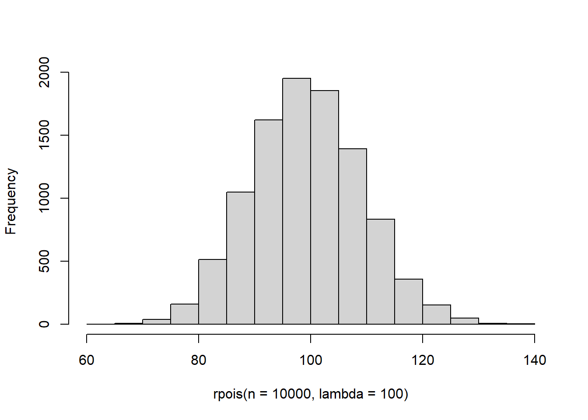
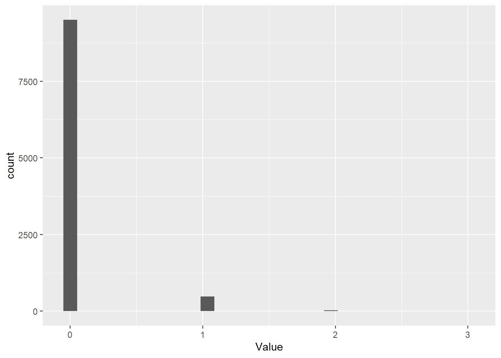
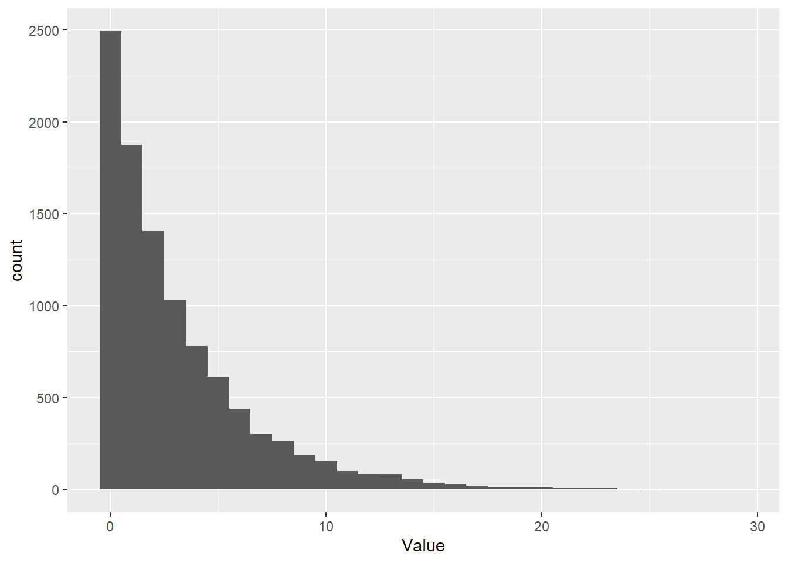
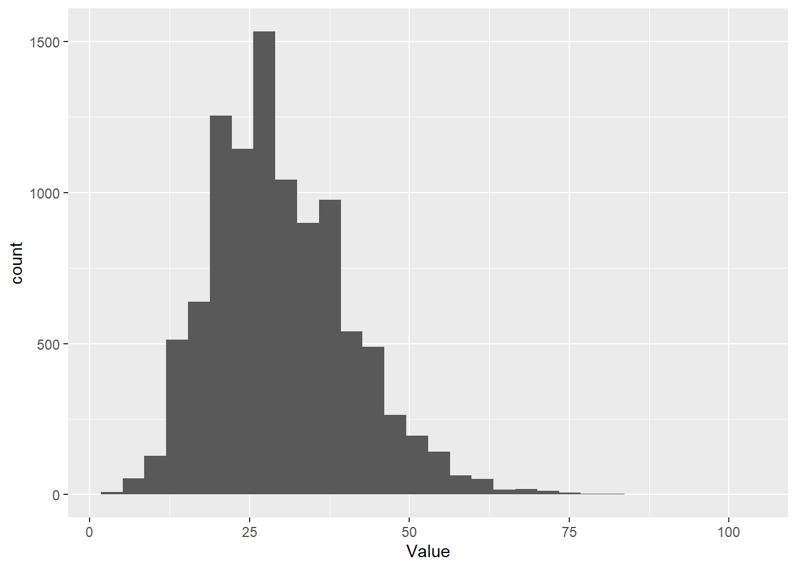
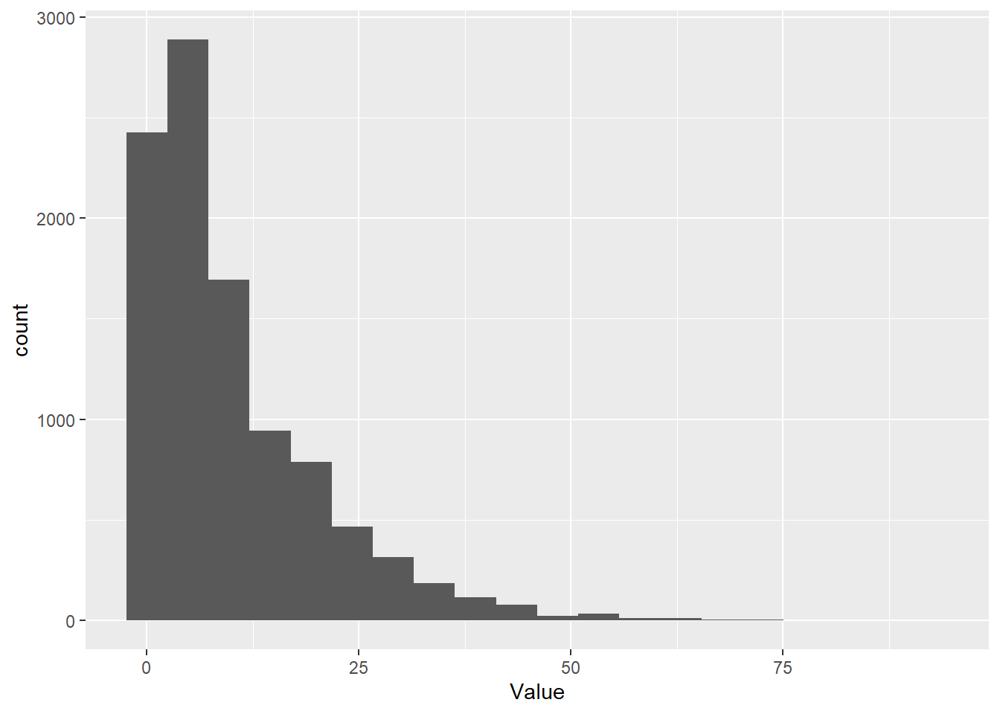
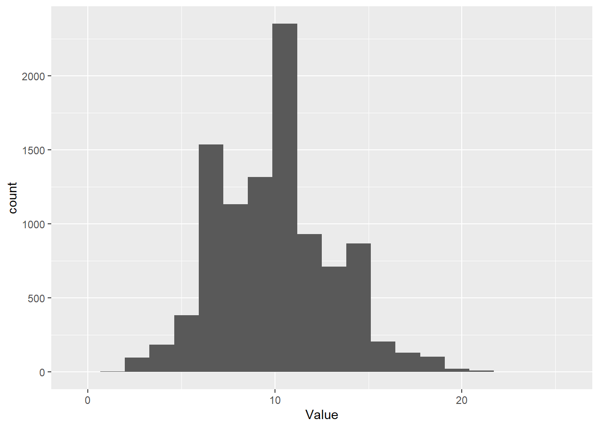
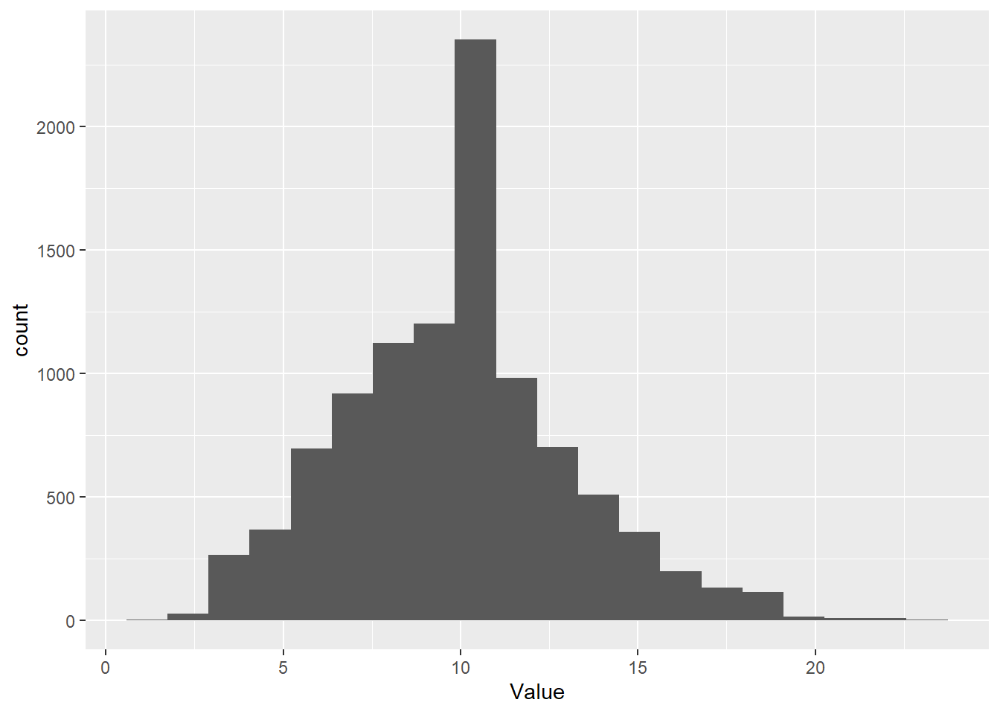

<!DOCTYPE html>
<html lang="" xml:lang="">
<head>

  <meta charset="utf-8" />
  <meta http-equiv="X-UA-Compatible" content="IE=edge" />
  <title>5.5 Discrete distributions | The Worst Stats Text eveR</title>
  <meta name="description" content="5.5 Discrete distributions | The Worst Stats Text eveR" />
  <meta name="generator" content="bookdown 0.29 and GitBook 2.6.7" />

  <meta property="og:title" content="5.5 Discrete distributions | The Worst Stats Text eveR" />
  <meta property="og:type" content="book" />
  
  
  

  <meta name="twitter:card" content="summary" />
  <meta name="twitter:title" content="5.5 Discrete distributions | The Worst Stats Text eveR" />
  
  
  

<meta name="author" content="Dan Stich" />


  <meta name="viewport" content="width=device-width, initial-scale=1" />
  <meta name="apple-mobile-web-app-capable" content="yes" />
  <meta name="apple-mobile-web-app-status-bar-style" content="black" />
  
  
<link rel="prev" href="5.4-continuous-distributions.html"/>
<link rel="next" href="5.6-sample-statistics.html"/>
<script src="libs/jquery-3.6.0/jquery-3.6.0.min.js"></script>
<script src="https://cdn.jsdelivr.net/npm/fuse.js@6.4.6/dist/fuse.min.js"></script>
<link href="libs/gitbook-2.6.7/css/style.css" rel="stylesheet" />
<link href="libs/gitbook-2.6.7/css/plugin-table.css" rel="stylesheet" />
<link href="libs/gitbook-2.6.7/css/plugin-bookdown.css" rel="stylesheet" />
<link href="libs/gitbook-2.6.7/css/plugin-highlight.css" rel="stylesheet" />
<link href="libs/gitbook-2.6.7/css/plugin-search.css" rel="stylesheet" />
<link href="libs/gitbook-2.6.7/css/plugin-fontsettings.css" rel="stylesheet" />
<link href="libs/gitbook-2.6.7/css/plugin-clipboard.css" rel="stylesheet" />


<link href="libs/anchor-sections-1.1.0/anchor-sections.css" rel="stylesheet" />
<link href="libs/anchor-sections-1.1.0/anchor-sections-hash.css" rel="stylesheet" />
<script src="libs/anchor-sections-1.1.0/anchor-sections.js"></script>
<html>

<head>
<base target="_blank">
</head>

<body>

</body>
</html>


<style type="text/css">
pre > code.sourceCode { white-space: pre; position: relative; }
pre > code.sourceCode > span { display: inline-block; line-height: 1.25; }
pre > code.sourceCode > span:empty { height: 1.2em; }
.sourceCode { overflow: visible; }
code.sourceCode > span { color: inherit; text-decoration: inherit; }
pre.sourceCode { margin: 0; }
@media screen {
div.sourceCode { overflow: auto; }
}
@media print {
pre > code.sourceCode { white-space: pre-wrap; }
pre > code.sourceCode > span { text-indent: -5em; padding-left: 5em; }
}
pre.numberSource code
  { counter-reset: source-line 0; }
pre.numberSource code > span
  { position: relative; left: -4em; counter-increment: source-line; }
pre.numberSource code > span > a:first-child::before
  { content: counter(source-line);
    position: relative; left: -1em; text-align: right; vertical-align: baseline;
    border: none; display: inline-block;
    -webkit-touch-callout: none; -webkit-user-select: none;
    -khtml-user-select: none; -moz-user-select: none;
    -ms-user-select: none; user-select: none;
    padding: 0 4px; width: 4em;
    color: #aaaaaa;
  }
pre.numberSource { margin-left: 3em; border-left: 1px solid #aaaaaa;  padding-left: 4px; }
div.sourceCode
  {   }
@media screen {
pre > code.sourceCode > span > a:first-child::before { text-decoration: underline; }
}
code span.al { color: #ff0000; font-weight: bold; } /* Alert */
code span.an { color: #60a0b0; font-weight: bold; font-style: italic; } /* Annotation */
code span.at { color: #7d9029; } /* Attribute */
code span.bn { color: #40a070; } /* BaseN */
code span.bu { color: #008000; } /* BuiltIn */
code span.cf { color: #007020; font-weight: bold; } /* ControlFlow */
code span.ch { color: #4070a0; } /* Char */
code span.cn { color: #880000; } /* Constant */
code span.co { color: #60a0b0; font-style: italic; } /* Comment */
code span.cv { color: #60a0b0; font-weight: bold; font-style: italic; } /* CommentVar */
code span.do { color: #ba2121; font-style: italic; } /* Documentation */
code span.dt { color: #902000; } /* DataType */
code span.dv { color: #40a070; } /* DecVal */
code span.er { color: #ff0000; font-weight: bold; } /* Error */
code span.ex { } /* Extension */
code span.fl { color: #40a070; } /* Float */
code span.fu { color: #06287e; } /* Function */
code span.im { color: #008000; font-weight: bold; } /* Import */
code span.in { color: #60a0b0; font-weight: bold; font-style: italic; } /* Information */
code span.kw { color: #007020; font-weight: bold; } /* Keyword */
code span.op { color: #666666; } /* Operator */
code span.ot { color: #007020; } /* Other */
code span.pp { color: #bc7a00; } /* Preprocessor */
code span.sc { color: #4070a0; } /* SpecialChar */
code span.ss { color: #bb6688; } /* SpecialString */
code span.st { color: #4070a0; } /* String */
code span.va { color: #19177c; } /* Variable */
code span.vs { color: #4070a0; } /* VerbatimString */
code span.wa { color: #60a0b0; font-weight: bold; font-style: italic; } /* Warning */
</style>


<link rel="stylesheet" href="style.css" type="text/css" />
</head>

<body>


  <div class="book without-animation with-summary font-size-2 font-family-1" data-basepath=".">

    <div class="book-summary">
      <nav role="navigation">

<ul class="summary">
<li><a href="./">The Worst Stats Text eveR</a></li>

<li class="divider"></li>
<li class="chapter" data-level="" data-path="index.html"><a href="index.html"><i class="fa fa-check"></i>The Worst Stats Text eveR</a></li>
<li class="chapter" data-level="" data-path="preface.html"><a href="preface.html"><i class="fa fa-check"></i>Preface</a></li>
<li class="chapter" data-level="" data-path="author.html"><a href="author.html"><i class="fa fa-check"></i>About the author</a></li>
<li class="chapter" data-level="1" data-path="1-Chapter1.html"><a href="1-Chapter1.html"><i class="fa fa-check"></i><b>1</b> Introduction to programming in R</a>
<ul>
<li class="chapter" data-level="1.1" data-path="1.1-what-is-r.html"><a href="1.1-what-is-r.html"><i class="fa fa-check"></i><b>1.1</b> What is R?</a></li>
<li class="chapter" data-level="1.2" data-path="1.2-why-should-i-use-r.html"><a href="1.2-why-should-i-use-r.html"><i class="fa fa-check"></i><b>1.2</b> Why should I use R?</a></li>
<li class="chapter" data-level="1.3" data-path="1.3-where-do-i-start.html"><a href="1.3-where-do-i-start.html"><i class="fa fa-check"></i><b>1.3</b> Where do I start?</a></li>
<li class="chapter" data-level="1.4" data-path="1.4-programming-conventions.html"><a href="1.4-programming-conventions.html"><i class="fa fa-check"></i><b>1.4</b> Programming conventions</a>
<ul>
<li class="chapter" data-level="" data-path="1.4-programming-conventions.html"><a href="1.4-programming-conventions.html#style"><i class="fa fa-check"></i>Style and organization</a></li>
<li class="chapter" data-level="" data-path="1.4-programming-conventions.html"><a href="1.4-programming-conventions.html#tips"><i class="fa fa-check"></i>Some handy coding tips</a></li>
<li class="chapter" data-level="" data-path="1.4-programming-conventions.html"><a href="1.4-programming-conventions.html#rules"><i class="fa fa-check"></i>Stricter R programming rules</a></li>
</ul></li>
<li class="chapter" data-level="1.5" data-path="1.5-next1.html"><a href="1.5-next1.html"><i class="fa fa-check"></i><b>1.5</b> Next steps</a></li>
</ul></li>
<li class="chapter" data-level="2" data-path="2-Chapter2.html"><a href="2-Chapter2.html"><i class="fa fa-check"></i><b>2</b> Data structures</a>
<ul>
<li class="chapter" data-level="2.1" data-path="2.1-vectors.html"><a href="2.1-vectors.html"><i class="fa fa-check"></i><b>2.1</b> Vectors</a>
<ul>
<li class="chapter" data-level="" data-path="2.1-vectors.html"><a href="2.1-vectors.html#nums"><i class="fa fa-check"></i>Integers and numerics</a></li>
<li class="chapter" data-level="" data-path="2.1-vectors.html"><a href="2.1-vectors.html#strings"><i class="fa fa-check"></i>Characters and factors</a></li>
<li class="chapter" data-level="" data-path="2.1-vectors.html"><a href="2.1-vectors.html#logicals"><i class="fa fa-check"></i>Logical vectors</a></li>
</ul></li>
<li class="chapter" data-level="2.2" data-path="2.2-operations.html"><a href="2.2-operations.html"><i class="fa fa-check"></i><b>2.2</b> Vector operations</a></li>
<li class="chapter" data-level="2.3" data-path="2.3-matrices.html"><a href="2.3-matrices.html"><i class="fa fa-check"></i><b>2.3</b> Matrices</a></li>
<li class="chapter" data-level="2.4" data-path="2.4-dataframes.html"><a href="2.4-dataframes.html"><i class="fa fa-check"></i><b>2.4</b> Dataframes</a></li>
<li class="chapter" data-level="2.5" data-path="2.5-lists.html"><a href="2.5-lists.html"><i class="fa fa-check"></i><b>2.5</b> Lists</a></li>
<li class="chapter" data-level="2.6" data-path="2.6-next2.html"><a href="2.6-next2.html"><i class="fa fa-check"></i><b>2.6</b> Next steps</a></li>
</ul></li>
<li class="chapter" data-level="3" data-path="3-Chapter3.html"><a href="3-Chapter3.html"><i class="fa fa-check"></i><b>3</b> Working with data</a>
<ul>
<li class="chapter" data-level="3.1" data-path="3.1-data-read.html"><a href="3.1-data-read.html"><i class="fa fa-check"></i><b>3.1</b> Data read</a></li>
<li class="chapter" data-level="3.2" data-path="3.2-quick-data-summaries.html"><a href="3.2-quick-data-summaries.html"><i class="fa fa-check"></i><b>3.2</b> Quick data summaries</a></li>
<li class="chapter" data-level="3.3" data-path="3.3-subsetting-and-selecting-data.html"><a href="3.3-subsetting-and-selecting-data.html"><i class="fa fa-check"></i><b>3.3</b> Subsetting and selecting data</a>
<ul>
<li class="chapter" data-level="3.3.1" data-path="3.3-subsetting-and-selecting-data.html"><a href="3.3-subsetting-and-selecting-data.html#manual-subsets-and-selections"><i class="fa fa-check"></i><b>3.3.1</b> Manual subsets and selections</a></li>
<li class="chapter" data-level="3.3.2" data-path="3.3-subsetting-and-selecting-data.html"><a href="3.3-subsetting-and-selecting-data.html#subsetting-and-summaries-in-base-r"><i class="fa fa-check"></i><b>3.3.2</b> Subsetting and summaries in base R</a></li>
<li class="chapter" data-level="3.3.3" data-path="3.3-subsetting-and-selecting-data.html"><a href="3.3-subsetting-and-selecting-data.html#tidyverse"><i class="fa fa-check"></i><b>3.3.3</b> Subsetting and summaries in the tidyverse</a></li>
</ul></li>
<li class="chapter" data-level="3.4" data-path="3.4-better-data-summaries.html"><a href="3.4-better-data-summaries.html"><i class="fa fa-check"></i><b>3.4</b> Better data summaries</a></li>
<li class="chapter" data-level="3.5" data-path="3.5-creating-new-variables.html"><a href="3.5-creating-new-variables.html"><i class="fa fa-check"></i><b>3.5</b> Creating new variables</a></li>
<li class="chapter" data-level="3.6" data-path="3.6-data-simulation.html"><a href="3.6-data-simulation.html"><i class="fa fa-check"></i><b>3.6</b> Data simulation</a>
<ul>
<li class="chapter" data-level="3.6.1" data-path="3.6-data-simulation.html"><a href="3.6-data-simulation.html#random-sub-samples-from-a-dataset"><i class="fa fa-check"></i><b>3.6.1</b> Random sub-samples from a dataset</a></li>
<li class="chapter" data-level="3.6.2" data-path="3.6-data-simulation.html"><a href="3.6-data-simulation.html#stochastic"><i class="fa fa-check"></i><b>3.6.2</b> Stochastic simulation</a></li>
</ul></li>
<li class="chapter" data-level="3.7" data-path="3.7-next3.html"><a href="3.7-next3.html"><i class="fa fa-check"></i><b>3.7</b> Next steps</a></li>
</ul></li>
<li class="chapter" data-level="4" data-path="4-Chapter4.html"><a href="4-Chapter4.html"><i class="fa fa-check"></i><b>4</b> Plotting and graphics</a>
<ul>
<li class="chapter" data-level="4.1" data-path="4.1-plots-matter-as-much-as-stats.html"><a href="4.1-plots-matter-as-much-as-stats.html"><i class="fa fa-check"></i><b>4.1</b> Plots matter as much as stats</a></li>
<li class="chapter" data-level="4.2" data-path="4.2-base-graphics.html"><a href="4.2-base-graphics.html"><i class="fa fa-check"></i><b>4.2</b> Plotting with base R</a>
<ul>
<li class="chapter" data-level="4.2.1" data-path="4.2-base-graphics.html"><a href="4.2-base-graphics.html#histograms"><i class="fa fa-check"></i><b>4.2.1</b> Histograms</a></li>
<li class="chapter" data-level="4.2.2" data-path="4.2-base-graphics.html"><a href="4.2-base-graphics.html#scatterplots"><i class="fa fa-check"></i><b>4.2.2</b> Scatterplots</a></li>
<li class="chapter" data-level="4.2.3" data-path="4.2-base-graphics.html"><a href="4.2-base-graphics.html#lines"><i class="fa fa-check"></i><b>4.2.3</b> Lines</a></li>
<li class="chapter" data-level="4.2.4" data-path="4.2-base-graphics.html"><a href="4.2-base-graphics.html#boxplots"><i class="fa fa-check"></i><b>4.2.4</b> Boxplots</a></li>
</ul></li>
<li class="chapter" data-level="4.3" data-path="4.3-plotting-with-ggplot2.html"><a href="4.3-plotting-with-ggplot2.html"><i class="fa fa-check"></i><b>4.3</b> Plotting with <code>ggplot2</code></a>
<ul>
<li class="chapter" data-level="4.3.1" data-path="4.3-plotting-with-ggplot2.html"><a href="4.3-plotting-with-ggplot2.html#gghists"><i class="fa fa-check"></i><b>4.3.1</b> Histograms</a></li>
<li class="chapter" data-level="4.3.2" data-path="4.3-plotting-with-ggplot2.html"><a href="4.3-plotting-with-ggplot2.html#ggscatter"><i class="fa fa-check"></i><b>4.3.2</b> Scatter plots</a></li>
<li class="chapter" data-level="4.3.3" data-path="4.3-plotting-with-ggplot2.html"><a href="4.3-plotting-with-ggplot2.html#gglines"><i class="fa fa-check"></i><b>4.3.3</b> Lines</a></li>
<li class="chapter" data-level="4.3.4" data-path="4.3-plotting-with-ggplot2.html"><a href="4.3-plotting-with-ggplot2.html#ggboxplots"><i class="fa fa-check"></i><b>4.3.4</b> Boxplots and</a></li>
</ul></li>
<li class="chapter" data-level="4.4" data-path="4.4-next4.html"><a href="4.4-next4.html"><i class="fa fa-check"></i><b>4.4</b> Next steps</a></li>
</ul></li>
<li class="chapter" data-level="5" data-path="5-Chapter5.html"><a href="5-Chapter5.html"><i class="fa fa-check"></i><b>5</b> Sampling distributions in R</a>
<ul>
<li class="chapter" data-level="5.1" data-path="5.1-what-are-sampling-distributions.html"><a href="5.1-what-are-sampling-distributions.html"><i class="fa fa-check"></i><b>5.1</b> What are sampling distributions?</a></li>
<li class="chapter" data-level="5.2" data-path="5.2-probability-distributions-in-r.html"><a href="5.2-probability-distributions-in-r.html"><i class="fa fa-check"></i><b>5.2</b> Probability distributions in R</a></li>
<li class="chapter" data-level="5.3" data-path="5.3-exponential-family.html"><a href="5.3-exponential-family.html"><i class="fa fa-check"></i><b>5.3</b> Exponential family</a></li>
<li class="chapter" data-level="5.4" data-path="5.4-continuous-distributions.html"><a href="5.4-continuous-distributions.html"><i class="fa fa-check"></i><b>5.4</b> Continuous distributions</a>
<ul>
<li class="chapter" data-level="5.4.1" data-path="5.4-continuous-distributions.html"><a href="5.4-continuous-distributions.html#the-lognormal-distribution"><i class="fa fa-check"></i><b>5.4.1</b> The lognormal distribution</a></li>
<li class="chapter" data-level="5.4.2" data-path="5.4-continuous-distributions.html"><a href="5.4-continuous-distributions.html#the-beta-distribution"><i class="fa fa-check"></i><b>5.4.2</b> The beta distribution</a></li>
</ul></li>
<li class="chapter" data-level="5.5" data-path="5.5-discrete-distributions.html"><a href="5.5-discrete-distributions.html"><i class="fa fa-check"></i><b>5.5</b> Discrete distributions</a>
<ul>
<li class="chapter" data-level="5.5.1" data-path="5.5-discrete-distributions.html"><a href="5.5-discrete-distributions.html#bernoulli"><i class="fa fa-check"></i><b>5.5.1</b> Bernoulli</a></li>
<li class="chapter" data-level="5.5.2" data-path="5.5-discrete-distributions.html"><a href="5.5-discrete-distributions.html#binomial"><i class="fa fa-check"></i><b>5.5.2</b> Binomial</a></li>
<li class="chapter" data-level="5.5.3" data-path="5.5-discrete-distributions.html"><a href="5.5-discrete-distributions.html#multinomial"><i class="fa fa-check"></i><b>5.5.3</b> Multinomial</a></li>
<li class="chapter" data-level="5.5.4" data-path="5.5-discrete-distributions.html"><a href="5.5-discrete-distributions.html#poisson"><i class="fa fa-check"></i><b>5.5.4</b> Poisson</a></li>
<li class="chapter" data-level="5.5.5" data-path="5.5-discrete-distributions.html"><a href="5.5-discrete-distributions.html#the-negative-binomial-distribution"><i class="fa fa-check"></i><b>5.5.5</b> The negative binomial distribution</a></li>
</ul></li>
<li class="chapter" data-level="5.6" data-path="5.6-sample-statistics.html"><a href="5.6-sample-statistics.html"><i class="fa fa-check"></i><b>5.6</b> Sample statistics</a>
<ul>
<li class="chapter" data-level="5.6.1" data-path="5.6-sample-statistics.html"><a href="5.6-sample-statistics.html#moments-about-the-mean"><i class="fa fa-check"></i><b>5.6.1</b> Moments about the mean</a></li>
<li class="chapter" data-level="5.6.2" data-path="5.6-sample-statistics.html"><a href="5.6-sample-statistics.html#estimating-parameters-of-the-normal-distribution-from-a-sample"><i class="fa fa-check"></i><b>5.6.2</b> Estimating parameters of the normal distribution from a sample</a></li>
<li class="chapter" data-level="5.6.3" data-path="5.6-sample-statistics.html"><a href="5.6-sample-statistics.html#quantiles-and-other-descriptive-statistics"><i class="fa fa-check"></i><b>5.6.3</b> Quantiles and other descriptive statistics</a></li>
</ul></li>
<li class="chapter" data-level="5.7" data-path="5.7-next5.html"><a href="5.7-next5.html"><i class="fa fa-check"></i><b>5.7</b> Next steps</a></li>
</ul></li>
<li class="chapter" data-level="6" data-path="6-Chapter6.html"><a href="6-Chapter6.html"><i class="fa fa-check"></i><b>6</b> Inferential statistics</a>
<ul>
<li class="chapter" data-level="6.1" data-path="6.1-one-sample-tests.html"><a href="6.1-one-sample-tests.html"><i class="fa fa-check"></i><b>6.1</b> One-sample tests</a>
<ul>
<li class="chapter" data-level="6.1.1" data-path="6.1-one-sample-tests.html"><a href="6.1-one-sample-tests.html#one-sample-t-test"><i class="fa fa-check"></i><b>6.1.1</b> One sample t-test</a></li>
<li class="chapter" data-level="6.1.2" data-path="6.1-one-sample-tests.html"><a href="6.1-one-sample-tests.html#wilcox-test"><i class="fa fa-check"></i><b>6.1.2</b> Wilcox test</a></li>
</ul></li>
<li class="chapter" data-level="6.2" data-path="6.2-two-sample-tests.html"><a href="6.2-two-sample-tests.html"><i class="fa fa-check"></i><b>6.2</b> Two-sample tests</a>
<ul>
<li class="chapter" data-level="6.2.1" data-path="6.2-two-sample-tests.html"><a href="6.2-two-sample-tests.html#the-two-sample-t-test"><i class="fa fa-check"></i><b>6.2.1</b> The two-sample t-test</a></li>
<li class="chapter" data-level="6.2.2" data-path="6.2-two-sample-tests.html"><a href="6.2-two-sample-tests.html#two-sample-wilcox-test"><i class="fa fa-check"></i><b>6.2.2</b> Two-sample Wilcox test</a></li>
<li class="chapter" data-level="6.2.3" data-path="6.2-two-sample-tests.html"><a href="6.2-two-sample-tests.html#presenting-your-results"><i class="fa fa-check"></i><b>6.2.3</b> Presenting your results</a></li>
</ul></li>
<li class="chapter" data-level="6.3" data-path="6.3-frequency-analysis.html"><a href="6.3-frequency-analysis.html"><i class="fa fa-check"></i><b>6.3</b> Frequency analysis</a>
<ul>
<li class="chapter" data-level="6.3.1" data-path="6.3-frequency-analysis.html"><a href="6.3-frequency-analysis.html#worked-example"><i class="fa fa-check"></i><b>6.3.1</b> Worked example</a></li>
</ul></li>
<li class="chapter" data-level="6.4" data-path="6.4-next6.html"><a href="6.4-next6.html"><i class="fa fa-check"></i><b>6.4</b> Next steps</a></li>
</ul></li>
<li class="chapter" data-level="7" data-path="7-Chapter7.html"><a href="7-Chapter7.html"><i class="fa fa-check"></i><b>7</b> Linear models</a>
<ul>
<li class="chapter" data-level="7.1" data-path="7.1-anova.html"><a href="7.1-anova.html"><i class="fa fa-check"></i><b>7.1</b> Analysis of variance (ANOVA)</a>
<ul>
<li class="chapter" data-level="7.1.1" data-path="7.1-anova.html"><a href="7.1-anova.html#one-way"><i class="fa fa-check"></i><b>7.1.1</b> One-way analysis of variance</a></li>
<li class="chapter" data-level="7.1.2" data-path="7.1-anova.html"><a href="7.1-anova.html#twon-way-anova"><i class="fa fa-check"></i><b>7.1.2</b> Two(<em>n</em>)-way ANOVA</a></li>
</ul></li>
<li class="chapter" data-level="7.2" data-path="7.2-simple-linear-regression.html"><a href="7.2-simple-linear-regression.html"><i class="fa fa-check"></i><b>7.2</b> Simple linear regression</a>
<ul>
<li class="chapter" data-level="7.2.1" data-path="7.2-simple-linear-regression.html"><a href="7.2-simple-linear-regression.html#simple-linear-regression-1"><i class="fa fa-check"></i><b>7.2.1</b> Simple linear regression</a></li>
</ul></li>
<li class="chapter" data-level="7.3" data-path="7.3-multiple-linear-regression.html"><a href="7.3-multiple-linear-regression.html"><i class="fa fa-check"></i><b>7.3</b> Multiple linear regression</a></li>
<li class="chapter" data-level="7.4" data-path="7.4-next7.html"><a href="7.4-next7.html"><i class="fa fa-check"></i><b>7.4</b> Next steps</a></li>
</ul></li>
<li class="chapter" data-level="8" data-path="8-Chapter8.html"><a href="8-Chapter8.html"><i class="fa fa-check"></i><b>8</b> General linear models</a>
<ul>
<li class="chapter" data-level="8.1" data-path="8.1-analysis-of-covariance-ancova.html"><a href="8.1-analysis-of-covariance-ancova.html"><i class="fa fa-check"></i><b>8.1</b> Analysis of covariance (ANCOVA)</a></li>
<li class="chapter" data-level="8.2" data-path="8.2-motivation.html"><a href="8.2-motivation.html"><i class="fa fa-check"></i><b>8.2</b> Motivation</a></li>
<li class="chapter" data-level="8.3" data-path="8.3-data.html"><a href="8.3-data.html"><i class="fa fa-check"></i><b>8.3</b> Data</a></li>
<li class="chapter" data-level="8.4" data-path="8.4-analysis.html"><a href="8.4-analysis.html"><i class="fa fa-check"></i><b>8.4</b> Analysis</a></li>
<li class="chapter" data-level="8.5" data-path="8.5-predictions.html"><a href="8.5-predictions.html"><i class="fa fa-check"></i><b>8.5</b> Predictions</a></li>
<li class="chapter" data-level="8.6" data-path="8.6-next8.html"><a href="8.6-next8.html"><i class="fa fa-check"></i><b>8.6</b> Next steps</a></li>
</ul></li>
<li class="chapter" data-level="9" data-path="9-Chapter9.html"><a href="9-Chapter9.html"><i class="fa fa-check"></i><b>9</b> Assumptions of linear models</a>
<ul>
<li class="chapter" data-level="9.1" data-path="9.1-intro9.html"><a href="9.1-intro9.html"><i class="fa fa-check"></i><b>9.1</b> Introduction</a></li>
<li class="chapter" data-level="9.2" data-path="9.2-assumptions-of-linear-models.html"><a href="9.2-assumptions-of-linear-models.html"><i class="fa fa-check"></i><b>9.2</b> Assumptions of linear models</a></li>
<li class="chapter" data-level="9.3" data-path="9.3-ughmath.html"><a href="9.3-ughmath.html"><i class="fa fa-check"></i><b>9.3</b> WTF is a residuals?</a>
<ul>
<li class="chapter" data-level="9.3.1" data-path="9.3-ughmath.html"><a href="9.3-ughmath.html#residuals-in-anova"><i class="fa fa-check"></i><b>9.3.1</b> Residuals in ANOVA</a></li>
<li class="chapter" data-level="9.3.2" data-path="9.3-ughmath.html"><a href="9.3-ughmath.html#residuals-in-linear-regression"><i class="fa fa-check"></i><b>9.3.2</b> Residuals in linear regression</a></li>
</ul></li>
<li class="chapter" data-level="9.4" data-path="9.4-the-turtle-problem.html"><a href="9.4-the-turtle-problem.html"><i class="fa fa-check"></i><b>9.4</b> The turtle problem</a></li>
<li class="chapter" data-level="9.5" data-path="9.5-data-exploration.html"><a href="9.5-data-exploration.html"><i class="fa fa-check"></i><b>9.5</b> Data exploration</a>
<ul>
<li class="chapter" data-level="9.5.1" data-path="9.5-data-exploration.html"><a href="9.5-data-exploration.html#independence-of-observations"><i class="fa fa-check"></i><b>9.5.1</b> Independence of observations</a></li>
<li class="chapter" data-level="9.5.2" data-path="9.5-data-exploration.html"><a href="9.5-data-exploration.html#normality-1"><i class="fa fa-check"></i><b>9.5.2</b> Normality</a></li>
<li class="chapter" data-level="9.5.3" data-path="9.5-data-exploration.html"><a href="9.5-data-exploration.html#homogeneity-of-variances"><i class="fa fa-check"></i><b>9.5.3</b> Homogeneity of variances</a></li>
</ul></li>
<li class="chapter" data-level="9.6" data-path="9.6-anova-diagnostics.html"><a href="9.6-anova-diagnostics.html"><i class="fa fa-check"></i><b>9.6</b> ANOVA Diagnostics</a></li>
<li class="chapter" data-level="9.7" data-path="9.7-linear-regression-diagnostics.html"><a href="9.7-linear-regression-diagnostics.html"><i class="fa fa-check"></i><b>9.7</b> Linear regression diagnostics</a></li>
<li class="chapter" data-level="9.8" data-path="9.8-next9.html"><a href="9.8-next9.html"><i class="fa fa-check"></i><b>9.8</b> Next steps</a></li>
</ul></li>
<li class="chapter" data-level="10" data-path="10-Chapter10.html"><a href="10-Chapter10.html"><i class="fa fa-check"></i><b>10</b> Communicating effect sizes</a>
<ul>
<li class="chapter" data-level="10.1" data-path="10.1-one-way-anova.html"><a href="10.1-one-way-anova.html"><i class="fa fa-check"></i><b>10.1</b> One-way ANOVA</a>
<ul>
<li class="chapter" data-level="10.1.1" data-path="10.1-one-way-anova.html"><a href="10.1-one-way-anova.html#unifying-the-linear-model"><i class="fa fa-check"></i><b>10.1.1</b> Unifying the linear model</a></li>
<li class="chapter" data-level="10.1.2" data-path="10.1-one-way-anova.html"><a href="10.1-one-way-anova.html#the-model-matrix"><i class="fa fa-check"></i><b>10.1.2</b> The model matrix</a></li>
<li class="chapter" data-level="10.1.3" data-path="10.1-one-way-anova.html"><a href="10.1-one-way-anova.html#prediction"><i class="fa fa-check"></i><b>10.1.3</b> Prediction</a></li>
<li class="chapter" data-level="10.1.4" data-path="10.1-one-way-anova.html"><a href="10.1-one-way-anova.html#plotting"><i class="fa fa-check"></i><b>10.1.4</b> Plotting</a></li>
</ul></li>
<li class="chapter" data-level="10.2" data-path="10.2-two-way-anova.html"><a href="10.2-two-way-anova.html"><i class="fa fa-check"></i><b>10.2</b> Two-way ANOVA</a>
<ul>
<li class="chapter" data-level="10.2.1" data-path="10.2-two-way-anova.html"><a href="10.2-two-way-anova.html#main-effects-10"><i class="fa fa-check"></i><b>10.2.1</b> Main effects model</a></li>
<li class="chapter" data-level="10.2.2" data-path="10.2-two-way-anova.html"><a href="10.2-two-way-anova.html#interactions"><i class="fa fa-check"></i><b>10.2.2</b> Interactions</a></li>
</ul></li>
<li class="chapter" data-level="10.3" data-path="10.3-linear-regression.html"><a href="10.3-linear-regression.html"><i class="fa fa-check"></i><b>10.3</b> Linear regression</a>
<ul>
<li class="chapter" data-level="10.3.1" data-path="10.3-linear-regression.html"><a href="10.3-linear-regression.html#prediction-1"><i class="fa fa-check"></i><b>10.3.1</b> Prediction</a></li>
<li class="chapter" data-level="10.3.2" data-path="10.3-linear-regression.html"><a href="10.3-linear-regression.html#plotting-1"><i class="fa fa-check"></i><b>10.3.2</b> Plotting</a></li>
</ul></li>
<li class="chapter" data-level="10.4" data-path="10.4-ancova.html"><a href="10.4-ancova.html"><i class="fa fa-check"></i><b>10.4</b> ANCOVA</a>
<ul>
<li class="chapter" data-level="10.4.1" data-path="10.4-ancova.html"><a href="10.4-ancova.html#prediction-2"><i class="fa fa-check"></i><b>10.4.1</b> Prediction</a></li>
<li class="chapter" data-level="10.4.2" data-path="10.4-ancova.html"><a href="10.4-ancova.html#plotting-2"><i class="fa fa-check"></i><b>10.4.2</b> Plotting</a></li>
</ul></li>
<li class="chapter" data-level="10.5" data-path="10.5-next10.html"><a href="10.5-next10.html"><i class="fa fa-check"></i><b>10.5</b> Next steps</a></li>
</ul></li>
<li class="chapter" data-level="11" data-path="11-Chapter11.html"><a href="11-Chapter11.html"><i class="fa fa-check"></i><b>11</b> Model selection</a>
<ul>
<li class="chapter" data-level="11.1" data-path="11.1-intro11.html"><a href="11.1-intro11.html"><i class="fa fa-check"></i><b>11.1</b> Introduction</a></li>
<li class="chapter" data-level="11.2" data-path="11.2-model-selection-tools.html"><a href="11.2-model-selection-tools.html"><i class="fa fa-check"></i><b>11.2</b> Model selection tools</a></li>
<li class="chapter" data-level="11.3" data-path="11.3-all-subsets.html"><a href="11.3-all-subsets.html"><i class="fa fa-check"></i><b>11.3</b> All subsets</a></li>
<li class="chapter" data-level="11.4" data-path="11.4-stepwise.html"><a href="11.4-stepwise.html"><i class="fa fa-check"></i><b>11.4</b> Stepwise selection</a>
<ul>
<li class="chapter" data-level="11.4.1" data-path="11.4-stepwise.html"><a href="11.4-stepwise.html#forward-selection"><i class="fa fa-check"></i><b>11.4.1</b> Forward selection</a></li>
</ul></li>
<li class="chapter" data-level="11.5" data-path="11.5-a-priori.html"><a href="11.5-a-priori.html"><i class="fa fa-check"></i><b>11.5</b> <em>A priori</em> selection</a>
<ul>
<li class="chapter" data-level="11.5.1" data-path="11.5-a-priori.html"><a href="11.5-a-priori.html#multi-phase-heirarchical-selection"><i class="fa fa-check"></i><b>11.5.1</b> Multi-phase (heirarchical) selection</a></li>
<li class="chapter" data-level="11.5.2" data-path="11.5-a-priori.html"><a href="11.5-a-priori.html#single-phase-selection"><i class="fa fa-check"></i><b>11.5.2</b> Single-phase selection</a></li>
<li class="chapter" data-level="11.5.3" data-path="11.5-a-priori.html"><a href="11.5-a-priori.html#tools-for-a-priori-model-selection"><i class="fa fa-check"></i><b>11.5.3</b> Tools for <em>a priori</em> model selection</a></li>
</ul></li>
<li class="chapter" data-level="11.6" data-path="11.6-model-validation.html"><a href="11.6-model-validation.html"><i class="fa fa-check"></i><b>11.6</b> Model validation</a>
<ul>
<li class="chapter" data-level="11.6.1" data-path="11.6-model-validation.html"><a href="11.6-model-validation.html#leave-one-out-cross-validation"><i class="fa fa-check"></i><b>11.6.1</b> Leave-one-out cross validation</a></li>
</ul></li>
<li class="chapter" data-level="11.7" data-path="11.7-next11.html"><a href="11.7-next11.html"><i class="fa fa-check"></i><b>11.7</b> Next steps</a></li>
</ul></li>
<li class="chapter" data-level="12" data-path="12-Chapter12.html"><a href="12-Chapter12.html"><i class="fa fa-check"></i><b>12</b> Logistic regression</a>
<ul>
<li class="chapter" data-level="12.1" data-path="12.1-intro12.html"><a href="12.1-intro12.html"><i class="fa fa-check"></i><b>12.1</b> Introduction</a></li>
<li class="chapter" data-level="12.2" data-path="12.2-Assumptions12.html"><a href="12.2-Assumptions12.html"><i class="fa fa-check"></i><b>12.2</b> Assumptions of linear models</a>
<ul>
<li class="chapter" data-level="12.2.1" data-path="12.2-Assumptions12.html"><a href="12.2-Assumptions12.html#assumption-1-normality-of-residuals"><i class="fa fa-check"></i><b>12.2.1</b> Assumption 1: normality of residuals</a></li>
<li class="chapter" data-level="12.2.2" data-path="12.2-Assumptions12.html"><a href="12.2-Assumptions12.html#assumption-2-independence-of-observations"><i class="fa fa-check"></i><b>12.2.2</b> Assumption 2: independence of observations</a></li>
<li class="chapter" data-level="12.2.3" data-path="12.2-Assumptions12.html"><a href="12.2-Assumptions12.html#assumption-3-homogeneity-of-variances"><i class="fa fa-check"></i><b>12.2.3</b> Assumption 3: homogeneity of variances</a></li>
<li class="chapter" data-level="12.2.4" data-path="12.2-Assumptions12.html"><a href="12.2-Assumptions12.html#assumption-4-linearity-and-additivity"><i class="fa fa-check"></i><b>12.2.4</b> Assumption 4: linearity and additivity</a></li>
</ul></li>
<li class="chapter" data-level="12.3" data-path="12.3-introducing-the-glm.html"><a href="12.3-introducing-the-glm.html"><i class="fa fa-check"></i><b>12.3</b> Introducing the GLM</a></li>
<li class="chapter" data-level="12.4" data-path="12.4-logistic.html"><a href="12.4-logistic.html"><i class="fa fa-check"></i><b>12.4</b> Binary (logistic) regression</a>
<ul>
<li class="chapter" data-level="12.4.1" data-path="12.4-logistic.html"><a href="12.4-logistic.html#data-explanation"><i class="fa fa-check"></i><b>12.4.1</b> Data Explanation</a></li>
<li class="chapter" data-level="12.4.2" data-path="12.4-logistic.html"><a href="12.4-logistic.html#data-analysis"><i class="fa fa-check"></i><b>12.4.2</b> Data analysis</a></li>
<li class="chapter" data-level="12.4.3" data-path="12.4-logistic.html"><a href="12.4-logistic.html#interpreting-the-results"><i class="fa fa-check"></i><b>12.4.3</b> Interpreting the results</a></li>
<li class="chapter" data-level="12.4.4" data-path="12.4-logistic.html"><a href="12.4-logistic.html#making-predictions"><i class="fa fa-check"></i><b>12.4.4</b> Making predictions</a></li>
</ul></li>
<li class="chapter" data-level="12.5" data-path="12.5-next12.html"><a href="12.5-next12.html"><i class="fa fa-check"></i><b>12.5</b> Next steps</a></li>
</ul></li>
<li class="chapter" data-level="13" data-path="13-Chapter13.html"><a href="13-Chapter13.html"><i class="fa fa-check"></i><b>13</b> GLM: Count models</a>
<ul>
<li class="chapter" data-level="13.1" data-path="13.1-intro13.html"><a href="13.1-intro13.html"><i class="fa fa-check"></i><b>13.1</b> Introduction</a></li>
<li class="chapter" data-level="13.2" data-path="13.2-poisson-13.html"><a href="13.2-poisson-13.html"><i class="fa fa-check"></i><b>13.2</b> Poisson regression</a>
<ul>
<li class="chapter" data-level="13.2.1" data-path="13.2-poisson-13.html"><a href="13.2-poisson-13.html#data-13"><i class="fa fa-check"></i><b>13.2.1</b> Data explanation</a></li>
</ul></li>
<li class="chapter" data-level="13.3" data-path="13.3-negbin.html"><a href="13.3-negbin.html"><i class="fa fa-check"></i><b>13.3</b> Negative binomial regression</a></li>
<li class="chapter" data-level="13.4" data-path="13.4-zinf-13.html"><a href="13.4-zinf-13.html"><i class="fa fa-check"></i><b>13.4</b> Zero inflation</a>
<ul>
<li class="chapter" data-level="13.4.1" data-path="13.4-zinf-13.html"><a href="13.4-zinf-13.html#predict-13"><i class="fa fa-check"></i><b>13.4.1</b> Predictions</a></li>
</ul></li>
<li class="chapter" data-level="13.5" data-path="13.5-next-13.html"><a href="13.5-next-13.html"><i class="fa fa-check"></i><b>13.5</b> Next steps</a></li>
</ul></li>
<li class="chapter" data-level="14" data-path="14-Chapter14.html"><a href="14-Chapter14.html"><i class="fa fa-check"></i><b>14</b> Linear mixed models</a>
<ul>
<li class="chapter" data-level="14.1" data-path="14.1-intro-14.html"><a href="14.1-intro-14.html"><i class="fa fa-check"></i><b>14.1</b> Introduction</a></li>
<li class="chapter" data-level="14.2" data-path="14.2-assumptions-lmm.html"><a href="14.2-assumptions-lmm.html"><i class="fa fa-check"></i><b>14.2</b> Assumptions of linear models</a>
<ul>
<li class="chapter" data-level="14.2.1" data-path="14.2-assumptions-lmm.html"><a href="14.2-assumptions-lmm.html#normality-14"><i class="fa fa-check"></i><b>14.2.1</b> Assumption 1: Normality of residuals</a></li>
<li class="chapter" data-level="14.2.2" data-path="14.2-assumptions-lmm.html"><a href="14.2-assumptions-lmm.html#independence-14"><i class="fa fa-check"></i><b>14.2.2</b> Assumption 2: Independence of observations</a></li>
<li class="chapter" data-level="14.2.3" data-path="14.2-assumptions-lmm.html"><a href="14.2-assumptions-lmm.html#homogeneity-14"><i class="fa fa-check"></i><b>14.2.3</b> Assumption 3: Homogeneity of variances</a></li>
<li class="chapter" data-level="14.2.4" data-path="14.2-assumptions-lmm.html"><a href="14.2-assumptions-lmm.html#linearity-14"><i class="fa fa-check"></i><b>14.2.4</b> Assumption 4: Linearity and additivity</a></li>
</ul></li>
<li class="chapter" data-level="14.3" data-path="14.3-linear-mixed-models.html"><a href="14.3-linear-mixed-models.html"><i class="fa fa-check"></i><b>14.3</b> Linear mixed models</a></li>
<li class="chapter" data-level="14.4" data-path="14.4-lmm-worked.html"><a href="14.4-lmm-worked.html"><i class="fa fa-check"></i><b>14.4</b> Worked example</a>
<ul>
<li class="chapter" data-level="14.4.1" data-path="14.4-lmm-worked.html"><a href="14.4-lmm-worked.html#random-intercepts-model"><i class="fa fa-check"></i><b>14.4.1</b> Random-intercepts model</a></li>
</ul></li>
<li class="chapter" data-level="14.5" data-path="14.5-next-14.html"><a href="14.5-next-14.html"><i class="fa fa-check"></i><b>14.5</b> Next steps</a></li>
</ul></li>
<li class="chapter" data-level="15" data-path="15-Chapter15.html"><a href="15-Chapter15.html"><i class="fa fa-check"></i><b>15</b> Generalized linear mixed models</a>
<ul>
<li class="chapter" data-level="15.1" data-path="15.1-intro-15.html"><a href="15.1-intro-15.html"><i class="fa fa-check"></i><b>15.1</b> Introduction</a></li>
<li class="chapter" data-level="15.2" data-path="15.2-glmm-logistic.html"><a href="15.2-glmm-logistic.html"><i class="fa fa-check"></i><b>15.2</b> Logistic regression</a>
<ul>
<li class="chapter" data-level="15.2.1" data-path="15.2-glmm-logistic.html"><a href="15.2-glmm-logistic.html#glmm-logistic-data"><i class="fa fa-check"></i><b>15.2.1</b> Data Explanation</a></li>
<li class="chapter" data-level="15.2.2" data-path="15.2-glmm-logistic.html"><a href="15.2-glmm-logistic.html#glmm-logistic-analysis"><i class="fa fa-check"></i><b>15.2.2</b> Data analysis</a></li>
<li class="chapter" data-level="15.2.3" data-path="15.2-glmm-logistic.html"><a href="15.2-glmm-logistic.html#glmm-logistic-preds"><i class="fa fa-check"></i><b>15.2.3</b> Predictions</a></li>
</ul></li>
<li class="chapter" data-level="15.3" data-path="15.3-glmm-count.html"><a href="15.3-glmm-count.html"><i class="fa fa-check"></i><b>15.3</b> Count models</a>
<ul>
<li class="chapter" data-level="15.3.1" data-path="15.3-glmm-count.html"><a href="15.3-glmm-count.html#data-explanation-glmm-count-data"><i class="fa fa-check"></i><b>15.3.1</b> Data explanation {glmm-count-data}</a></li>
<li class="chapter" data-level="15.3.2" data-path="15.3-glmm-count.html"><a href="15.3-glmm-count.html#glmm-count-analysis"><i class="fa fa-check"></i><b>15.3.2</b> Data analysis</a></li>
<li class="chapter" data-level="15.3.3" data-path="15.3-glmm-count.html"><a href="15.3-glmm-count.html#glmm-count-preds"><i class="fa fa-check"></i><b>15.3.3</b> Predictions</a></li>
</ul></li>
<li class="chapter" data-level="15.4" data-path="15.4-next-15.html"><a href="15.4-next-15.html"><i class="fa fa-check"></i><b>15.4</b> Next steps</a></li>
</ul></li>
<li class="chapter" data-level="16" data-path="16-introduction-to-bayesian-inference.html"><a href="16-introduction-to-bayesian-inference.html"><i class="fa fa-check"></i><b>16</b> Introduction to Bayesian inference</a>
<ul>
<li class="chapter" data-level="16.1" data-path="16.1-intro-16.html"><a href="16.1-intro-16.html"><i class="fa fa-check"></i><b>16.1</b> Introduction</a>
<ul>
<li class="chapter" data-level="16.1.1" data-path="16.1-intro-16.html"><a href="16.1-intro-16.html#installing-rstan"><i class="fa fa-check"></i><b>16.1.1</b> Installing RStan</a></li>
</ul></li>
<li class="chapter" data-level="16.2" data-path="16.2-intro-to-bayes-theorem.html"><a href="16.2-intro-to-bayes-theorem.html"><i class="fa fa-check"></i><b>16.2</b> Intro to Bayes Theorem</a></li>
<li class="chapter" data-level="16.3" data-path="16.3-the-prior.html"><a href="16.3-the-prior.html"><i class="fa fa-check"></i><b>16.3</b> The prior</a>
<ul>
<li class="chapter" data-level="16.3.1" data-path="16.3-the-prior.html"><a href="16.3-the-prior.html#the-hospital-example"><i class="fa fa-check"></i><b>16.3.1</b> The hospital example</a></li>
</ul></li>
<li class="chapter" data-level="16.4" data-path="16.4-the-posterior.html"><a href="16.4-the-posterior.html"><i class="fa fa-check"></i><b>16.4</b> The posterior</a></li>
<li class="chapter" data-level="16.5" data-path="16.5-worked-example-with-the-cray-data.html"><a href="16.5-worked-example-with-the-cray-data.html"><i class="fa fa-check"></i><b>16.5</b> Worked example with the Cray data</a></li>
<li class="chapter" data-level="16.6" data-path="16.6-running-a-bayesian-model-with-rstanarm.html"><a href="16.6-running-a-bayesian-model-with-rstanarm.html"><i class="fa fa-check"></i><b>16.6</b> Running a Bayesian model with <code>rstanarm</code></a>
<ul>
<li class="chapter" data-level="16.6.1" data-path="16.6-running-a-bayesian-model-with-rstanarm.html"><a href="16.6-running-a-bayesian-model-with-rstanarm.html#interpreting-the-model-summary"><i class="fa fa-check"></i><b>16.6.1</b> Interpreting the model summary</a></li>
</ul></li>
<li class="chapter" data-level="16.7" data-path="16.7-more-diagnostics.html"><a href="16.7-more-diagnostics.html"><i class="fa fa-check"></i><b>16.7</b> More diagnostics</a>
<ul>
<li class="chapter" data-level="16.7.1" data-path="16.7-more-diagnostics.html"><a href="16.7-more-diagnostics.html#trace-plots"><i class="fa fa-check"></i><b>16.7.1</b> Trace plots</a></li>
<li class="chapter" data-level="16.7.2" data-path="16.7-more-diagnostics.html"><a href="16.7-more-diagnostics.html#colinearity"><i class="fa fa-check"></i><b>16.7.2</b> Colinearity</a></li>
<li class="chapter" data-level="16.7.3" data-path="16.7-more-diagnostics.html"><a href="16.7-more-diagnostics.html#divergence"><i class="fa fa-check"></i><b>16.7.3</b> Divergence</a></li>
</ul></li>
<li class="chapter" data-level="16.8" data-path="16.8-bayesian-model-selection.html"><a href="16.8-bayesian-model-selection.html"><i class="fa fa-check"></i><b>16.8</b> Model selection</a></li>
<li class="chapter" data-level="16.9" data-path="16.9-summarizing-results.html"><a href="16.9-summarizing-results.html"><i class="fa fa-check"></i><b>16.9</b> Summarizing results</a></li>
<li class="chapter" data-level="16.10" data-path="16.10-making-predictions-1.html"><a href="16.10-making-predictions-1.html"><i class="fa fa-check"></i><b>16.10</b> Making predictions</a></li>
<li class="chapter" data-level="16.11" data-path="16.11-next-16.html"><a href="16.11-next-16.html"><i class="fa fa-check"></i><b>16.11</b> Next steps</a></li>
</ul></li>
<li class="chapter" data-level="17" data-path="17-Chapter17.html"><a href="17-Chapter17.html"><i class="fa fa-check"></i><b>17</b> Bayesian Logistic regression</a>
<ul>
<li class="chapter" data-level="17.1" data-path="17.1-intro17.html"><a href="17.1-intro17.html"><i class="fa fa-check"></i><b>17.1</b> Introduction</a></li>
<li class="chapter" data-level="17.2" data-path="17.2-logistic-17.html"><a href="17.2-logistic-17.html"><i class="fa fa-check"></i><b>17.2</b> Binary (logistic) regression</a>
<ul>
<li class="chapter" data-level="17.2.1" data-path="17.2-logistic-17.html"><a href="17.2-logistic-17.html#data-17"><i class="fa fa-check"></i><b>17.2.1</b> Data Explanation</a></li>
<li class="chapter" data-level="17.2.2" data-path="17.2-logistic-17.html"><a href="17.2-logistic-17.html#analysis-17"><i class="fa fa-check"></i><b>17.2.2</b> Data analysis</a></li>
<li class="chapter" data-level="17.2.3" data-path="17.2-logistic-17.html"><a href="17.2-logistic-17.html#interpretting-17"><i class="fa fa-check"></i><b>17.2.3</b> Interpreting the results</a></li>
<li class="chapter" data-level="17.2.4" data-path="17.2-logistic-17.html"><a href="17.2-logistic-17.html#continuous-17"><i class="fa fa-check"></i><b>17.2.4</b> Continuous effects</a></li>
<li class="chapter" data-level="17.2.5" data-path="17.2-logistic-17.html"><a href="17.2-logistic-17.html#predictions-17"><i class="fa fa-check"></i><b>17.2.5</b> Making predictions</a></li>
</ul></li>
<li class="chapter" data-level="17.3" data-path="17.3-next17.html"><a href="17.3-next17.html"><i class="fa fa-check"></i><b>17.3</b> Next steps</a></li>
</ul></li>
<li class="chapter" data-level="18" data-path="18-Chapter18.html"><a href="18-Chapter18.html"><i class="fa fa-check"></i><b>18</b> GLM: Count models</a>
<ul>
<li class="chapter" data-level="18.1" data-path="18.1-intro18.html"><a href="18.1-intro18.html"><i class="fa fa-check"></i><b>18.1</b> Introduction</a></li>
<li class="chapter" data-level="18.2" data-path="18.2-poisson-18.html"><a href="18.2-poisson-18.html"><i class="fa fa-check"></i><b>18.2</b> Poisson regression</a>
<ul>
<li class="chapter" data-level="18.2.1" data-path="18.2-poisson-18.html"><a href="18.2-poisson-18.html#data-18"><i class="fa fa-check"></i><b>18.2.1</b> Data explanation</a></li>
</ul></li>
<li class="chapter" data-level="18.3" data-path="18.3-negbin-18.html"><a href="18.3-negbin-18.html"><i class="fa fa-check"></i><b>18.3</b> Negative binomial regression</a></li>
<li class="chapter" data-level="18.4" data-path="18.4-zinfl-18.html"><a href="18.4-zinfl-18.html"><i class="fa fa-check"></i><b>18.4</b> Zero inflation</a>
<ul>
<li class="chapter" data-level="18.4.1" data-path="18.4-zinfl-18.html"><a href="18.4-zinfl-18.html#step-1-presence-absence"><i class="fa fa-check"></i><b>18.4.1</b> Step 1: Presence-absence</a></li>
<li class="chapter" data-level="18.4.2" data-path="18.4-zinfl-18.html"><a href="18.4-zinfl-18.html#step-2-counts-given-presence"><i class="fa fa-check"></i><b>18.4.2</b> Step 2: Counts given presence</a></li>
<li class="chapter" data-level="18.4.3" data-path="18.4-zinfl-18.html"><a href="18.4-zinfl-18.html#predict-counts"><i class="fa fa-check"></i><b>18.4.3</b> Predictions</a></li>
</ul></li>
<li class="chapter" data-level="18.5" data-path="18.5-next-steps.html"><a href="18.5-next-steps.html"><i class="fa fa-check"></i><b>18.5</b> Next steps</a></li>
</ul></li>
<li class="chapter" data-level="19" data-path="19-Chapter19.html"><a href="19-Chapter19.html"><i class="fa fa-check"></i><b>19</b> Bayesian hierarchical models</a>
<ul>
<li class="chapter" data-level="19.1" data-path="19.1-intro-19.html"><a href="19.1-intro-19.html"><i class="fa fa-check"></i><b>19.1</b> Introduction</a></li>
<li class="chapter" data-level="19.2" data-path="19.2-hierarchical.html"><a href="19.2-hierarchical.html"><i class="fa fa-check"></i><b>19.2</b> Bayesian hierarchical models</a></li>
<li class="chapter" data-level="19.3" data-path="19.3-worked-19.html"><a href="19.3-worked-19.html"><i class="fa fa-check"></i><b>19.3</b> Worked example</a>
<ul>
<li class="chapter" data-level="19.3.1" data-path="19.3-worked-19.html"><a href="19.3-worked-19.html#random-intercept-19"><i class="fa fa-check"></i><b>19.3.1</b> Random-intercepts model</a></li>
</ul></li>
<li class="chapter" data-level="19.4" data-path="19.4-next-19.html"><a href="19.4-next-19.html"><i class="fa fa-check"></i><b>19.4</b> Next steps</a></li>
</ul></li>
<li class="chapter" data-level="20" data-path="20-Chapter20.html"><a href="20-Chapter20.html"><i class="fa fa-check"></i><b>20</b> Bayesian hierarchical GLM</a>
<ul>
<li class="chapter" data-level="20.1" data-path="20.1-intro-20.html"><a href="20.1-intro-20.html"><i class="fa fa-check"></i><b>20.1</b> Introduction</a></li>
<li class="chapter" data-level="20.2" data-path="20.2-id_20-logistic.html"><a href="20.2-id_20-logistic.html"><i class="fa fa-check"></i><b>20.2</b> Logistic regression</a>
<ul>
<li class="chapter" data-level="20.2.1" data-path="20.2-id_20-logistic.html"><a href="20.2-id_20-logistic.html#id_20-logistic-data"><i class="fa fa-check"></i><b>20.2.1</b> Data Explanation</a></li>
<li class="chapter" data-level="20.2.2" data-path="20.2-id_20-logistic.html"><a href="20.2-id_20-logistic.html#id_20-logistic-analysis"><i class="fa fa-check"></i><b>20.2.2</b> Data analysis</a></li>
<li class="chapter" data-level="20.2.3" data-path="20.2-id_20-logistic.html"><a href="20.2-id_20-logistic.html#id_20-logistic-preds"><i class="fa fa-check"></i><b>20.2.3</b> Predictions</a></li>
</ul></li>
<li class="chapter" data-level="20.3" data-path="20.3-id_20-count.html"><a href="20.3-id_20-count.html"><i class="fa fa-check"></i><b>20.3</b> Count models</a>
<ul>
<li class="chapter" data-level="20.3.1" data-path="20.3-id_20-count.html"><a href="20.3-id_20-count.html#data-explanation-20-count-data"><i class="fa fa-check"></i><b>20.3.1</b> Data explanation {20-count-data}</a></li>
<li class="chapter" data-level="20.3.2" data-path="20.3-id_20-count.html"><a href="20.3-id_20-count.html#id_20-count-analysis"><i class="fa fa-check"></i><b>20.3.2</b> Data analysis</a></li>
<li class="chapter" data-level="20.3.3" data-path="20.3-id_20-count.html"><a href="20.3-id_20-count.html#id_20-count-preds"><i class="fa fa-check"></i><b>20.3.3</b> Predictions</a></li>
</ul></li>
<li class="chapter" data-level="20.4" data-path="20.4-next-20.html"><a href="20.4-next-20.html"><i class="fa fa-check"></i><b>20.4</b> Next steps</a></li>
</ul></li>
<li class="divider"></li>
<li><a href="https://github.com/rstudio/bookdown" target="blank">Published with bookdown</a></li>

</ul>

      </nav>
    </div>

    <div class="book-body">
      <div class="body-inner">
        <div class="book-header" role="navigation">
          <h1>
            <i class="fa fa-circle-o-notch fa-spin"></i><a href="./">The Worst Stats Text eveR</a>
          </h1>
        </div>

        <div class="page-wrapper" tabindex="-1" role="main">
          <div class="page-inner">

            <section class="normal" id="section-">
<div id="discrete-distributions" class="section level2 hasAnchor" number="5.5">
<h2><span class="header-section-number">5.5</span> Discrete distributions<a href="5.5-discrete-distributions.html#discrete-distributions" class="anchor-section" aria-label="Anchor link to header"></a></h2>
<p><strong>Discrete</strong> probability distributions are useful for situations in which our random variable of interest can only take specific values within the interval of interest. For example, this might include age, counts, pass/fail, or any number of conceivable categories. As a result, these require a slightly different treatment of probability as a discrete, rather than continuous phenomenon. (Think back to our histogram that we started with in this chapter.)</p>
<div id="bernoulli" class="section level3 hasAnchor" number="5.5.1">
<h3><span class="header-section-number">5.5.1</span> Bernoulli<a href="5.5-discrete-distributions.html#bernoulli" class="anchor-section" aria-label="Anchor link to header"></a></h3>
<p>The <strong>Bernoulli distribution</strong> is a special case of the binomial distribution with a single trial (see below for clarification). Bernoulli outcomes are those for which the variable we are measuring can take on one of two values: a one or a zero. This distribution is useful for visualizing processes such as coin flips, yes/no responses, live/dead endpoints in lab studies, and a number of other very interesting phenomena. The Bernoulli distribution has a single parameter: the probability of success, but the number of successful outcomes is also governed by sample size: <em>n</em>, which R calls <code>size</code> because <code>n</code> was already taken.</p>
<p>We can simulate data from a Bernoulli distribution in one of two ways in R.</p>
<p>The old-school way of doing this was to draw from a binomial with a single <strong>trial</strong>. Here we randomly draw a single sample from a binomial with a single trial, and a 50% chance of success. Well use the example of hatching chicken eggs with some probability of success. If you are boring, you can think about flipping coins, too!</p>
<p>Well start with one chicken egg that has a 50% chance of successfully hatching (probability of success = 0.50).</p>
<div class="sourceCode" id="cb183"><pre class="sourceCode r"><code class="sourceCode r"><span id="cb183-1"><a href="5.5-discrete-distributions.html#cb183-1" aria-hidden="true" tabindex="-1"></a><span class="fu">rbinom</span>(<span class="at">n=</span><span class="dv">1</span>, <span class="at">size=</span><span class="dv">1</span>, <span class="at">prob=</span>.<span class="dv">5</span>)</span></code></pre></div>
<pre><code>## [1] 1</code></pre>
<p>There is also a function called <code>rbern</code> in the <code>Rlab</code> package that simplifies this for the specific case of a Bernoulli.</p>
<p>Lets do it again with that function:</p>
<div class="sourceCode" id="cb185"><pre class="sourceCode r"><code class="sourceCode r"><span id="cb185-1"><a href="5.5-discrete-distributions.html#cb185-1" aria-hidden="true" tabindex="-1"></a><span class="co"># Hatch one egg with 50% success rate</span></span>
<span id="cb185-2"><a href="5.5-discrete-distributions.html#cb185-2" aria-hidden="true" tabindex="-1"></a><span class="fu">rbern</span>(<span class="at">n =</span> <span class="dv">1</span>, <span class="at">prob =</span> .<span class="dv">5</span>)</span></code></pre></div>
<pre><code>## [1] 1</code></pre>
<p>Or we could hatch a whole bunch of eggs:</p>
<div class="sourceCode" id="cb187"><pre class="sourceCode r"><code class="sourceCode r"><span id="cb187-1"><a href="5.5-discrete-distributions.html#cb187-1" aria-hidden="true" tabindex="-1"></a><span class="co"># Hatch ten eggs, each with p = 0.5</span></span>
<span id="cb187-2"><a href="5.5-discrete-distributions.html#cb187-2" aria-hidden="true" tabindex="-1"></a><span class="fu">rbern</span>(<span class="at">n =</span> <span class="dv">10</span>, <span class="at">prob =</span> .<span class="dv">5</span>)</span></code></pre></div>
<pre><code>##  [1] 0 0 1 1 1 0 1 0 0 1</code></pre>
<p>Then, we could even count how many of those were successful. Do you remember how to do that? There are several different ways. Youll have to come up with one for the homework assignment (hint: see <a href="2-Chapter2.html#Chapter2">Chapter 2</a>).</p>
</div>
<div id="binomial" class="section level3 hasAnchor" number="5.5.2">
<h3><span class="header-section-number">5.5.2</span> Binomial<a href="5.5-discrete-distributions.html#binomial" class="anchor-section" aria-label="Anchor link to header"></a></h3>
<p>The <strong>binomial distribution</strong> is pretty similar to the Bernoulli distribution. In fact, the Bernoulli is just a special kind of binomial. The binomial includes a parameter called <span class="math inline">\(N\)</span> (<code>size</code> in R) which corresponds to a number of trials per sample. We assume that this is 1 in the case of Bernoulli. In most cases in biology, it will suffice to use the Bernoulli, but for modeling we will want to understand the binomial for things like random stratified designs and nested models that rely on the use of binomial distribution. Later in your career, you might even get into cool models that estimate <span class="math inline">\(N\)</span> as a latent state to estimate population size (for example). Plus, using the binomial is way faster and can be more precise for certain regression applications [okay, that one should probably have a citation, but this is The Worst Stats Text eveR, so go Google it].</p>
<p>To sample data from a binomial distribution, we can use <code>rbinom</code> from base R. In this example we tell R that we want 10 samples (<code>n</code>) from a binomial distribution that has 10 trials (<code>size</code>) and a probability of success (<code>prob</code>) of 0.5. This is like hatching ten eggs from each of ten chickens instead of just one chicken laying ten eggs.</p>
<div class="sourceCode" id="cb189"><pre class="sourceCode r"><code class="sourceCode r"><span id="cb189-1"><a href="5.5-discrete-distributions.html#cb189-1" aria-hidden="true" tabindex="-1"></a><span class="co"># Take a random draw of 10 samples</span></span>
<span id="cb189-2"><a href="5.5-discrete-distributions.html#cb189-2" aria-hidden="true" tabindex="-1"></a><span class="co"># from a binomial distribution with 10 trials</span></span>
<span id="cb189-3"><a href="5.5-discrete-distributions.html#cb189-3" aria-hidden="true" tabindex="-1"></a><span class="co"># and probability of success equal to 0.50</span></span>
<span id="cb189-4"><a href="5.5-discrete-distributions.html#cb189-4" aria-hidden="true" tabindex="-1"></a><span class="fu">rbinom</span>(<span class="at">n=</span><span class="dv">10</span>, <span class="at">size=</span><span class="dv">10</span>, <span class="at">prob=</span><span class="fl">0.5</span>)</span></code></pre></div>
<pre><code>##  [1] 4 6 5 4 4 7 6 7 5 5</code></pre>
<p>Remember as you look through these that your numbers should look different than mine (at least most of the time) because these are being generated randomly.</p>
</div>
<div id="multinomial" class="section level3 hasAnchor" number="5.5.3">
<h3><span class="header-section-number">5.5.3</span> Multinomial<a href="5.5-discrete-distributions.html#multinomial" class="anchor-section" aria-label="Anchor link to header"></a></h3>
<p>The <strong>multinomial distribution</strong> is a further generalization of the Binomial and Bernoulli distributions. Here, there are one or more possible categorical outcomes (states), and the probability of each one occurring is specified individually <strong>but all of them must sum to one</strong>. The categories are, in this case, assumed to be a <strong>mutually exclusive</strong> and <strong>exhaustive</strong> set of possible outcomes.</p>
<p>We can use the multinomial distribution to randomly sample from categories (imagine our response variable is a categorical variable, like the names of the students in this class).</p>
<p>To do this, we need to read in the <code>s_names.csv</code> file from our <code>data</code> folder that is definitely in your working directory (<strong>remember to set your working directory first</strong>).</p>
<p>Read in the data file with <code>stringsAsFactors = FALSE</code> for purposes of demonstrating with categorical variables (not factors).</p>
<div class="sourceCode" id="cb191"><pre class="sourceCode r"><code class="sourceCode r"><span id="cb191-1"><a href="5.5-discrete-distributions.html#cb191-1" aria-hidden="true" tabindex="-1"></a>s_names <span class="ot">&lt;-</span> <span class="fu">read.csv</span>(<span class="st">&#39;data/s_names.csv&#39;</span>, <span class="at">stringsAsFactors =</span> <span class="cn">FALSE</span>)</span></code></pre></div>
<p>Next, lets assign the variable <code>name</code> in <code>s_names</code> to a vector for simplicity.</p>
<div class="sourceCode" id="cb192"><pre class="sourceCode r"><code class="sourceCode r"><span id="cb192-1"><a href="5.5-discrete-distributions.html#cb192-1" aria-hidden="true" tabindex="-1"></a>name <span class="ot">&lt;-</span> s_names<span class="sc">$</span>name</span></code></pre></div>
<p>Then, we can assign a uniform probability of drawing any given name if we divide one by the number of names.</p>
<div class="sourceCode" id="cb193"><pre class="sourceCode r"><code class="sourceCode r"><span id="cb193-1"><a href="5.5-discrete-distributions.html#cb193-1" aria-hidden="true" tabindex="-1"></a><span class="co"># Calculate probability of getting a given </span></span>
<span id="cb193-2"><a href="5.5-discrete-distributions.html#cb193-2" aria-hidden="true" tabindex="-1"></a><span class="co"># name based on the length of the vector</span></span>
<span id="cb193-3"><a href="5.5-discrete-distributions.html#cb193-3" aria-hidden="true" tabindex="-1"></a>prob_each <span class="ot">&lt;-</span> <span class="dv">1</span> <span class="sc">/</span> <span class="fu">length</span>(name)</span>
<span id="cb193-4"><a href="5.5-discrete-distributions.html#cb193-4" aria-hidden="true" tabindex="-1"></a></span>
<span id="cb193-5"><a href="5.5-discrete-distributions.html#cb193-5" aria-hidden="true" tabindex="-1"></a><span class="co"># Repeat this probability for each </span></span>
<span id="cb193-6"><a href="5.5-discrete-distributions.html#cb193-6" aria-hidden="true" tabindex="-1"></a><span class="co"># name in our vector of names</span></span>
<span id="cb193-7"><a href="5.5-discrete-distributions.html#cb193-7" aria-hidden="true" tabindex="-1"></a>probs <span class="ot">&lt;-</span> <span class="fu">rep</span>(prob_each, <span class="at">times =</span> <span class="fu">length</span>(name))      </span>
<span id="cb193-8"><a href="5.5-discrete-distributions.html#cb193-8" aria-hidden="true" tabindex="-1"></a>probs      </span></code></pre></div>
<pre><code>##  [1] 0.03846154 0.03846154 0.03846154 0.03846154 0.03846154 0.03846154
##  [7] 0.03846154 0.03846154 0.03846154 0.03846154 0.03846154 0.03846154
## [13] 0.03846154 0.03846154 0.03846154 0.03846154 0.03846154 0.03846154
## [19] 0.03846154 0.03846154 0.03846154 0.03846154 0.03846154 0.03846154
## [25] 0.03846154 0.03846154</code></pre>
<p>This shows us that the probability of drawing any of the individual names is <code>{r prob_each}</code>.</p>
<p>Now, we can sample from a multinomial distribution using our objects. Here we are taking 5 samples from the distribution, each time we sample there is only one trial, and we are sampling with the 26 probabilities above.</p>
<p>Have a look:</p>
<div class="sourceCode" id="cb195"><pre class="sourceCode r"><code class="sourceCode r"><span id="cb195-1"><a href="5.5-discrete-distributions.html#cb195-1" aria-hidden="true" tabindex="-1"></a><span class="fu">rmultinom</span>(<span class="at">n=</span><span class="dv">5</span>, <span class="at">size=</span><span class="dv">1</span>, <span class="at">prob=</span>probs)</span></code></pre></div>
<pre><code>##       [,1] [,2] [,3] [,4] [,5]
##  [1,]    0    0    0    0    0
##  [2,]    0    0    0    0    0
##  [3,]    0    1    0    0    0
##  [4,]    0    0    0    0    0
##  [5,]    0    0    0    0    1
##  [6,]    0    0    0    0    0
##  [7,]    0    0    0    0    0
##  [8,]    0    0    0    0    0
##  [9,]    0    0    0    0    0
## [10,]    0    0    0    0    0
## [11,]    0    0    0    0    0
## [12,]    0    0    1    1    0
## [13,]    0    0    0    0    0
## [14,]    1    0    0    0    0
## [15,]    0    0    0    0    0
## [16,]    0    0    0    0    0
## [17,]    0    0    0    0    0
## [18,]    0    0    0    0    0
## [19,]    0    0    0    0    0
## [20,]    0    0    0    0    0
## [21,]    0    0    0    0    0
## [22,]    0    0    0    0    0
## [23,]    0    0    0    0    0
## [24,]    0    0    0    0    0
## [25,]    0    0    0    0    0
## [26,]    0    0    0    0    0</code></pre>
<p><strong>WHOA</strong> a matrix??!!! <strong>What does it all mean</strong>?</p>
<p>Take a step back, breathe, and think about this. The rows in this matrix are you and your classmates. If we took one random sample from the multinomial distribution, it would look like this:</p>
<div class="sourceCode" id="cb197"><pre class="sourceCode r"><code class="sourceCode r"><span id="cb197-1"><a href="5.5-discrete-distributions.html#cb197-1" aria-hidden="true" tabindex="-1"></a><span class="co"># Take a single sample from</span></span>
<span id="cb197-2"><a href="5.5-discrete-distributions.html#cb197-2" aria-hidden="true" tabindex="-1"></a><span class="co"># the list of student names    </span></span>
<span id="cb197-3"><a href="5.5-discrete-distributions.html#cb197-3" aria-hidden="true" tabindex="-1"></a><span class="fu">rmultinom</span>(<span class="at">n=</span><span class="dv">1</span>, <span class="at">size=</span><span class="dv">1</span>, <span class="at">prob=</span>probs)</span></code></pre></div>
<pre><code>##       [,1]
##  [1,]    0
##  [2,]    0
##  [3,]    0
##  [4,]    0
##  [5,]    0
##  [6,]    0
##  [7,]    0
##  [8,]    0
##  [9,]    0
## [10,]    0
## [11,]    0
## [12,]    0
## [13,]    0
## [14,]    0
## [15,]    0
## [16,]    0
## [17,]    0
## [18,]    0
## [19,]    0
## [20,]    0
## [21,]    0
## [22,]    0
## [23,]    0
## [24,]    0
## [25,]    1
## [26,]    0</code></pre>
<p>Here, we pulled a single sample from the distribution, and probability of sampling a given individual was 0.04 (1/26). If it makes it easier, we can put your names next to it:</p>
<div class="sourceCode" id="cb199"><pre class="sourceCode r"><code class="sourceCode r"><span id="cb199-1"><a href="5.5-discrete-distributions.html#cb199-1" aria-hidden="true" tabindex="-1"></a><span class="fu">cbind</span>(name, <span class="fu">rmultinom</span>(<span class="at">n=</span><span class="dv">1</span>, <span class="at">size=</span><span class="dv">1</span>, <span class="at">prob=</span>probs))</span></code></pre></div>
<pre><code>##       name             
##  [1,] &quot;Ava&quot;         &quot;0&quot;
##  [2,] &quot;Dillon&quot;      &quot;0&quot;
##  [3,] &quot;Delaney&quot;     &quot;0&quot;
##  [4,] &quot;Manolo&quot;      &quot;0&quot;
##  [5,] &quot;Sarah&quot;       &quot;0&quot;
##  [6,] &quot;Shannon&quot;     &quot;0&quot;
##  [7,] &quot;Olivia&quot;      &quot;0&quot;
##  [8,] &quot;Ebony&quot;       &quot;0&quot;
##  [9,] &quot;Julia&quot;       &quot;0&quot;
## [10,] &quot;Davi&quot;        &quot;0&quot;
## [11,] &quot;Gabrielle&quot;   &quot;0&quot;
## [12,] &quot;Jordan&quot;      &quot;0&quot;
## [13,] &quot;Tayler&quot;      &quot;0&quot;
## [14,] &quot;Summer&quot;      &quot;0&quot;
## [15,] &quot;Leah&quot;        &quot;0&quot;
## [16,] &quot;Christine&quot;   &quot;0&quot;
## [17,] &quot;Ashley&quot;      &quot;0&quot;
## [18,] &quot;Katherine&quot;   &quot;0&quot;
## [19,] &quot;James&quot;       &quot;0&quot;
## [20,] &quot;Emily&quot;       &quot;0&quot;
## [21,] &quot;Cassidy&quot;     &quot;1&quot;
## [22,] &quot;Maximillion&quot; &quot;0&quot;
## [23,] &quot;Sierra&quot;      &quot;0&quot;
## [24,] &quot;Kyle&quot;        &quot;0&quot;
## [25,] &quot;Diana&quot;       &quot;0&quot;
## [26,] &quot;Amanda&quot;      &quot;0&quot;</code></pre>
<p>Now, if I was calling on you randomly in class, after 10 questions, the spread of people who would have participated in class might look like this (or whatever you got - remember, it is random):</p>
<div class="sourceCode" id="cb201"><pre class="sourceCode r"><code class="sourceCode r"><span id="cb201-1"><a href="5.5-discrete-distributions.html#cb201-1" aria-hidden="true" tabindex="-1"></a><span class="fu">cbind</span>(name, <span class="fu">rmultinom</span>(<span class="at">n=</span><span class="dv">10</span>, <span class="at">size=</span><span class="dv">1</span>, <span class="at">prob=</span>probs))</span></code></pre></div>
<pre><code>##       name                                                 
##  [1,] &quot;Ava&quot;         &quot;0&quot; &quot;0&quot; &quot;0&quot; &quot;0&quot; &quot;0&quot; &quot;0&quot; &quot;0&quot; &quot;0&quot; &quot;0&quot; &quot;0&quot;
##  [2,] &quot;Dillon&quot;      &quot;0&quot; &quot;0&quot; &quot;0&quot; &quot;0&quot; &quot;0&quot; &quot;0&quot; &quot;0&quot; &quot;0&quot; &quot;0&quot; &quot;0&quot;
##  [3,] &quot;Delaney&quot;     &quot;0&quot; &quot;0&quot; &quot;0&quot; &quot;0&quot; &quot;0&quot; &quot;0&quot; &quot;0&quot; &quot;0&quot; &quot;0&quot; &quot;0&quot;
##  [4,] &quot;Manolo&quot;      &quot;0&quot; &quot;1&quot; &quot;0&quot; &quot;0&quot; &quot;0&quot; &quot;0&quot; &quot;0&quot; &quot;0&quot; &quot;0&quot; &quot;0&quot;
##  [5,] &quot;Sarah&quot;       &quot;0&quot; &quot;0&quot; &quot;0&quot; &quot;0&quot; &quot;0&quot; &quot;0&quot; &quot;0&quot; &quot;0&quot; &quot;0&quot; &quot;0&quot;
##  [6,] &quot;Shannon&quot;     &quot;0&quot; &quot;0&quot; &quot;0&quot; &quot;0&quot; &quot;0&quot; &quot;0&quot; &quot;0&quot; &quot;0&quot; &quot;0&quot; &quot;0&quot;
##  [7,] &quot;Olivia&quot;      &quot;0&quot; &quot;0&quot; &quot;0&quot; &quot;0&quot; &quot;0&quot; &quot;0&quot; &quot;0&quot; &quot;0&quot; &quot;0&quot; &quot;0&quot;
##  [8,] &quot;Ebony&quot;       &quot;0&quot; &quot;0&quot; &quot;0&quot; &quot;0&quot; &quot;0&quot; &quot;0&quot; &quot;0&quot; &quot;0&quot; &quot;1&quot; &quot;0&quot;
##  [9,] &quot;Julia&quot;       &quot;0&quot; &quot;0&quot; &quot;0&quot; &quot;0&quot; &quot;0&quot; &quot;0&quot; &quot;0&quot; &quot;0&quot; &quot;0&quot; &quot;0&quot;
## [10,] &quot;Davi&quot;        &quot;0&quot; &quot;0&quot; &quot;0&quot; &quot;0&quot; &quot;0&quot; &quot;0&quot; &quot;0&quot; &quot;0&quot; &quot;0&quot; &quot;0&quot;
## [11,] &quot;Gabrielle&quot;   &quot;0&quot; &quot;0&quot; &quot;0&quot; &quot;0&quot; &quot;0&quot; &quot;1&quot; &quot;0&quot; &quot;0&quot; &quot;0&quot; &quot;0&quot;
## [12,] &quot;Jordan&quot;      &quot;0&quot; &quot;0&quot; &quot;1&quot; &quot;0&quot; &quot;0&quot; &quot;0&quot; &quot;0&quot; &quot;0&quot; &quot;0&quot; &quot;0&quot;
## [13,] &quot;Tayler&quot;      &quot;0&quot; &quot;0&quot; &quot;0&quot; &quot;0&quot; &quot;0&quot; &quot;0&quot; &quot;0&quot; &quot;0&quot; &quot;0&quot; &quot;1&quot;
## [14,] &quot;Summer&quot;      &quot;0&quot; &quot;0&quot; &quot;0&quot; &quot;0&quot; &quot;1&quot; &quot;0&quot; &quot;0&quot; &quot;0&quot; &quot;0&quot; &quot;0&quot;
## [15,] &quot;Leah&quot;        &quot;0&quot; &quot;0&quot; &quot;0&quot; &quot;0&quot; &quot;0&quot; &quot;0&quot; &quot;0&quot; &quot;0&quot; &quot;0&quot; &quot;0&quot;
## [16,] &quot;Christine&quot;   &quot;1&quot; &quot;0&quot; &quot;0&quot; &quot;0&quot; &quot;0&quot; &quot;0&quot; &quot;0&quot; &quot;0&quot; &quot;0&quot; &quot;0&quot;
## [17,] &quot;Ashley&quot;      &quot;0&quot; &quot;0&quot; &quot;0&quot; &quot;0&quot; &quot;0&quot; &quot;0&quot; &quot;0&quot; &quot;0&quot; &quot;0&quot; &quot;0&quot;
## [18,] &quot;Katherine&quot;   &quot;0&quot; &quot;0&quot; &quot;0&quot; &quot;0&quot; &quot;0&quot; &quot;0&quot; &quot;0&quot; &quot;0&quot; &quot;0&quot; &quot;0&quot;
## [19,] &quot;James&quot;       &quot;0&quot; &quot;0&quot; &quot;0&quot; &quot;1&quot; &quot;0&quot; &quot;0&quot; &quot;0&quot; &quot;0&quot; &quot;0&quot; &quot;0&quot;
## [20,] &quot;Emily&quot;       &quot;0&quot; &quot;0&quot; &quot;0&quot; &quot;0&quot; &quot;0&quot; &quot;0&quot; &quot;0&quot; &quot;0&quot; &quot;0&quot; &quot;0&quot;
## [21,] &quot;Cassidy&quot;     &quot;0&quot; &quot;0&quot; &quot;0&quot; &quot;0&quot; &quot;0&quot; &quot;0&quot; &quot;0&quot; &quot;0&quot; &quot;0&quot; &quot;0&quot;
## [22,] &quot;Maximillion&quot; &quot;0&quot; &quot;0&quot; &quot;0&quot; &quot;0&quot; &quot;0&quot; &quot;0&quot; &quot;0&quot; &quot;0&quot; &quot;0&quot; &quot;0&quot;
## [23,] &quot;Sierra&quot;      &quot;0&quot; &quot;0&quot; &quot;0&quot; &quot;0&quot; &quot;0&quot; &quot;0&quot; &quot;0&quot; &quot;0&quot; &quot;0&quot; &quot;0&quot;
## [24,] &quot;Kyle&quot;        &quot;0&quot; &quot;0&quot; &quot;0&quot; &quot;0&quot; &quot;0&quot; &quot;0&quot; &quot;0&quot; &quot;0&quot; &quot;0&quot; &quot;0&quot;
## [25,] &quot;Diana&quot;       &quot;0&quot; &quot;0&quot; &quot;0&quot; &quot;0&quot; &quot;0&quot; &quot;0&quot; &quot;1&quot; &quot;1&quot; &quot;0&quot; &quot;0&quot;
## [26,] &quot;Amanda&quot;      &quot;0&quot; &quot;0&quot; &quot;0&quot; &quot;0&quot; &quot;0&quot; &quot;0&quot; &quot;0&quot; &quot;0&quot; &quot;0&quot; &quot;0&quot;</code></pre>
<p>Taking this one step further, we could just draw a name and stop looking at these ugly (no but really they are <strong>awesome</strong>!) matrices:</p>
<div class="sourceCode" id="cb203"><pre class="sourceCode r"><code class="sourceCode r"><span id="cb203-1"><a href="5.5-discrete-distributions.html#cb203-1" aria-hidden="true" tabindex="-1"></a>name[<span class="fu">which</span>(<span class="fu">rmultinom</span>(<span class="at">n=</span><span class="dv">1</span>, <span class="at">size=</span><span class="dv">1</span>, <span class="at">prob=</span>probs)<span class="sc">&gt;</span><span class="dv">0</span>)]</span></code></pre></div>
<pre><code>## [1] &quot;Summer&quot;</code></pre>
<p>And now we have a way to randomly select an individual based on a multinomial distribution. What fun!</p>
</div>
<div id="poisson" class="section level3 hasAnchor" number="5.5.4">
<h3><span class="header-section-number">5.5.4</span> Poisson<a href="5.5-discrete-distributions.html#poisson" class="anchor-section" aria-label="Anchor link to header"></a></h3>
<p>The <strong>Poisson distribution</strong> is used for counts or other integer data. This distribution is widely used (and just as widely misused!) for its ability to account for a large number of biological and ecological processes in the models that we will discuss this semester. The Poisson distribution has a single parameter, <span class="math inline">\(\lambda\)</span>, which is both the mean and the variance of the distribution. So, despite its utility, the distribution is relatively inflexible with respect to shape and spread. <strong>Fun fact</strong>: this distribution was made widely known by a Russian economist to predict the number of soldiers who were accidentally killed from being kicked by horses in the Prussian army each year. It is named, however, after French mathematician Simon Denis Poisson. [fails to provide citations for any of this]</p>
<p>Take a look at how the distribution changes when you change <span class="math inline">\(\lambda\)</span>, and you will get an idea of how this one works. It is probably the most straightforward of any weve considered.</p>
<div class="sourceCode" id="cb205"><pre class="sourceCode r"><code class="sourceCode r"><span id="cb205-1"><a href="5.5-discrete-distributions.html#cb205-1" aria-hidden="true" tabindex="-1"></a><span class="fu">hist</span>(<span class="fu">rpois</span>(<span class="at">n=</span><span class="fl">1e4</span>, <span class="at">lambda=</span><span class="dv">100</span>), <span class="at">main=</span><span class="st">&#39;&#39;</span>)</span></code></pre></div>
<p></p>
<p>Well set it aside for now because it often fails us (or our data fail it, I suppose).</p>
</div>
<div id="the-negative-binomial-distribution" class="section level3 hasAnchor" number="5.5.5">
<h3><span class="header-section-number">5.5.5</span> The negative binomial distribution<a href="5.5-discrete-distributions.html#the-negative-binomial-distribution" class="anchor-section" aria-label="Anchor link to header"></a></h3>
<p>Okay, this one can be a little difficult to wrap your head around but its an important one for us to know about. So, we will spend a little extra time setting this one up to try and be clear. Often, folks start out thinking that theyre going to use a Poisson distribution and they end up collecting with data that do not conform to the relative inflexibility of that single-parameter distribution. Where they end up usually tends to be a negative binomial in a best case (well talk about challenges associated with lots of zeros later in the book).</p>
<p>For the purpose of this class, we are not going to dive into the mechanics of the <strong>negative binomial distribution</strong>, but we do need to know what it looks like and why we might need it.</p>
<p>One useful way to conceptualize the negative binomial is how long does it take for some event to occur? For example, we might ask how long it takes a fish to start migrating, how long it takes a sea turtle to recover in a rehabilitation center, how long it will take for a terminal patient to expire (ooh, thats dark), or how frequently we see the expression of a gene of interest. These kinds of questions are asked in aptly named time-to-event models that rely on the variance structure of the negative binomial. In the context of these kinds of questions, the negative binomial is a discrete probability distribution (and not a continuous distribution) because the time component of the distribution is actually a series of independent Bernoulli trials (holy crap!). For example: if we want to know how many days it will take for a turtle to recover from an injury, what we are really doing is asking on each day until recovery, Is today the day?. Then, we flip a coin and find out. So, each day in this example is a Bernoulli trial. Another way to think about this is the number of failures occurring in a sequence before a target number of sucesses is achieved.</p>
<p>For the classical parameterization:</p>
<p>We will start by looking at how many failures are observed before one success in a sequence of Bernoulli trials.</p>
<p>With probability of succes equal to 0.95, it doesnt take long and most of the probability mass is near zero, with a couple of stragglers further out.</p>
<div class="sourceCode" id="cb206"><pre class="sourceCode r"><code class="sourceCode r"><span id="cb206-1"><a href="5.5-discrete-distributions.html#cb206-1" aria-hidden="true" tabindex="-1"></a><span class="co"># Take a random sample from the negative binomial</span></span>
<span id="cb206-2"><a href="5.5-discrete-distributions.html#cb206-2" aria-hidden="true" tabindex="-1"></a>Value <span class="ot">&lt;-</span> <span class="fu">rnbinom</span>(<span class="fl">1e4</span>, <span class="at">size=</span><span class="dv">1</span>, <span class="at">prob=</span>.<span class="dv">95</span>)</span>
<span id="cb206-3"><a href="5.5-discrete-distributions.html#cb206-3" aria-hidden="true" tabindex="-1"></a></span>
<span id="cb206-4"><a href="5.5-discrete-distributions.html#cb206-4" aria-hidden="true" tabindex="-1"></a><span class="co"># Make a histogram of it with ggplot</span></span>
<span id="cb206-5"><a href="5.5-discrete-distributions.html#cb206-5" aria-hidden="true" tabindex="-1"></a><span class="fu">ggplot</span>() <span class="sc">+</span> <span class="fu">geom_histogram</span>( <span class="fu">aes</span>(<span class="at">x =</span> Value) )</span></code></pre></div>
<p></p>
<p>If we decrease probability of success in each trial to 0.25, we see more failures on average before we reach success. Most of the time, it still takes less than 5 trials to reach a success, but some times it takes much longer.</p>
<div class="sourceCode" id="cb207"><pre class="sourceCode r"><code class="sourceCode r"><span id="cb207-1"><a href="5.5-discrete-distributions.html#cb207-1" aria-hidden="true" tabindex="-1"></a><span class="co"># Take a random sample from the negative binomial</span></span>
<span id="cb207-2"><a href="5.5-discrete-distributions.html#cb207-2" aria-hidden="true" tabindex="-1"></a>Value <span class="ot">&lt;-</span> <span class="fu">rnbinom</span>(<span class="fl">1e4</span>, <span class="at">size=</span><span class="dv">1</span>, <span class="at">prob=</span>.<span class="dv">25</span>)</span>
<span id="cb207-3"><a href="5.5-discrete-distributions.html#cb207-3" aria-hidden="true" tabindex="-1"></a></span>
<span id="cb207-4"><a href="5.5-discrete-distributions.html#cb207-4" aria-hidden="true" tabindex="-1"></a><span class="co"># Make a histogram of it with ggplot</span></span>
<span id="cb207-5"><a href="5.5-discrete-distributions.html#cb207-5" aria-hidden="true" tabindex="-1"></a><span class="fu">ggplot</span>() <span class="sc">+</span> <span class="fu">geom_histogram</span>( <span class="fu">aes</span>(<span class="at">x =</span> Value) )</span></code></pre></div>
<p></p>
<p>And, if we increase the number of successes that we use for our criterion, or target, then it spreads the distribution out even further.</p>
<div class="sourceCode" id="cb208"><pre class="sourceCode r"><code class="sourceCode r"><span id="cb208-1"><a href="5.5-discrete-distributions.html#cb208-1" aria-hidden="true" tabindex="-1"></a><span class="co"># Take a random sample from the negative binomial</span></span>
<span id="cb208-2"><a href="5.5-discrete-distributions.html#cb208-2" aria-hidden="true" tabindex="-1"></a>Value <span class="ot">&lt;-</span> <span class="fu">rnbinom</span>(<span class="fl">1e4</span>, <span class="at">size=</span><span class="dv">10</span>, <span class="at">prob=</span>.<span class="dv">25</span>)</span>
<span id="cb208-3"><a href="5.5-discrete-distributions.html#cb208-3" aria-hidden="true" tabindex="-1"></a></span>
<span id="cb208-4"><a href="5.5-discrete-distributions.html#cb208-4" aria-hidden="true" tabindex="-1"></a><span class="co"># Make a histogram of it with ggplot</span></span>
<span id="cb208-5"><a href="5.5-discrete-distributions.html#cb208-5" aria-hidden="true" tabindex="-1"></a><span class="fu">ggplot</span>() <span class="sc">+</span> <span class="fu">geom_histogram</span>( <span class="fu">aes</span>(<span class="at">x =</span> Value) )</span></code></pre></div>
<p></p>
<p>Now, because of its properties, the negative binomial is also useful for number of other applications that have nothing to do with interpretting the results of repeated binomial trials. Specifically, it has been widely used to represent Poisson-like processes in which the mean and variance are not equal (e.g., <strong>overdispersion</strong>). This has seen a lot of application in the field of ecology, especially for overdispersed count data.</p>
<p>Here, we draw 10,000 random samples from a negative binomial distribution with a mean of 10 and an overdispersion parameter of 1. The overdispersion parameter is called size because this is an alternative parameterization that is just making use of the relationships between existing parameters of the negative binomial. Its easy to grasp how the mean changes the location of the distribution.</p>
<div class="sourceCode" id="cb209"><pre class="sourceCode r"><code class="sourceCode r"><span id="cb209-1"><a href="5.5-discrete-distributions.html#cb209-1" aria-hidden="true" tabindex="-1"></a><span class="co"># Take a random sample from the negative binomial</span></span>
<span id="cb209-2"><a href="5.5-discrete-distributions.html#cb209-2" aria-hidden="true" tabindex="-1"></a>Value <span class="ot">&lt;-</span> <span class="fu">rnbinom</span>(<span class="fl">1e4</span>, <span class="at">mu =</span> <span class="dv">10</span>, <span class="at">size =</span> <span class="dv">1</span>)</span>
<span id="cb209-3"><a href="5.5-discrete-distributions.html#cb209-3" aria-hidden="true" tabindex="-1"></a></span>
<span id="cb209-4"><a href="5.5-discrete-distributions.html#cb209-4" aria-hidden="true" tabindex="-1"></a><span class="co"># Make a histogram of it with ggplot</span></span>
<span id="cb209-5"><a href="5.5-discrete-distributions.html#cb209-5" aria-hidden="true" tabindex="-1"></a><span class="fu">ggplot</span>() <span class="sc">+</span> <span class="fu">geom_histogram</span>( <span class="fu">aes</span>(<span class="at">x =</span> Value), <span class="at">bins =</span> <span class="dv">20</span> )</span></code></pre></div>
<p></p>
<p>But, note how the overdispersion parameter changes things if you run the following code:</p>
<div class="sourceCode" id="cb210"><pre class="sourceCode r"><code class="sourceCode r"><span id="cb210-1"><a href="5.5-discrete-distributions.html#cb210-1" aria-hidden="true" tabindex="-1"></a><span class="co"># Take a random sample from the negative binomial</span></span>
<span id="cb210-2"><a href="5.5-discrete-distributions.html#cb210-2" aria-hidden="true" tabindex="-1"></a>Value <span class="ot">&lt;-</span> <span class="fu">rnbinom</span>(<span class="fl">1e4</span>, <span class="at">mu =</span> <span class="dv">10</span>, <span class="at">size =</span> <span class="dv">1000</span>)</span>
<span id="cb210-3"><a href="5.5-discrete-distributions.html#cb210-3" aria-hidden="true" tabindex="-1"></a></span>
<span id="cb210-4"><a href="5.5-discrete-distributions.html#cb210-4" aria-hidden="true" tabindex="-1"></a><span class="co"># Make a histogram of it with ggplot</span></span>
<span id="cb210-5"><a href="5.5-discrete-distributions.html#cb210-5" aria-hidden="true" tabindex="-1"></a><span class="fu">ggplot</span>() <span class="sc">+</span> <span class="fu">geom_histogram</span>( <span class="fu">aes</span>(<span class="at">x =</span> Value), <span class="at">bins =</span> <span class="dv">20</span> )</span></code></pre></div>
<p></p>
<p>A more intuitive way (I think) to work with the negative binomial in R is by using the <code>MASS</code> package. In this parameterization, we use the mean and the
dispersion parameter explicitly so it makes more sense:</p>
<div class="sourceCode" id="cb211"><pre class="sourceCode r"><code class="sourceCode r"><span id="cb211-1"><a href="5.5-discrete-distributions.html#cb211-1" aria-hidden="true" tabindex="-1"></a><span class="co"># Take a random sample from the negative binomial</span></span>
<span id="cb211-2"><a href="5.5-discrete-distributions.html#cb211-2" aria-hidden="true" tabindex="-1"></a>Value <span class="ot">&lt;-</span> <span class="fu">rnegbin</span>(<span class="fl">1e4</span>, <span class="at">mu =</span> <span class="dv">10</span>, <span class="at">theta =</span> <span class="dv">1000</span>)</span>
<span id="cb211-3"><a href="5.5-discrete-distributions.html#cb211-3" aria-hidden="true" tabindex="-1"></a></span>
<span id="cb211-4"><a href="5.5-discrete-distributions.html#cb211-4" aria-hidden="true" tabindex="-1"></a><span class="co"># Make a histogram of it with ggplot</span></span>
<span id="cb211-5"><a href="5.5-discrete-distributions.html#cb211-5" aria-hidden="true" tabindex="-1"></a><span class="fu">ggplot</span>() <span class="sc">+</span> <span class="fu">geom_histogram</span>( <span class="fu">aes</span>(<span class="at">x =</span> Value), <span class="at">bins =</span> <span class="dv">20</span> )</span></code></pre></div>
<p></p>
<p>The results are pretty much identical. Just two different naming systems for the parameters.</p>
</div>
</div>
            </section>

          </div>
        </div>
      </div>
<a href="5.4-continuous-distributions.html" class="navigation navigation-prev " aria-label="Previous page"><i class="fa fa-angle-left"></i></a>
<a href="5.6-sample-statistics.html" class="navigation navigation-next " aria-label="Next page"><i class="fa fa-angle-right"></i></a>
    </div>
  </div>
<script src="libs/gitbook-2.6.7/js/app.min.js"></script>
<script src="libs/gitbook-2.6.7/js/clipboard.min.js"></script>
<script src="libs/gitbook-2.6.7/js/plugin-search.js"></script>
<script src="libs/gitbook-2.6.7/js/plugin-sharing.js"></script>
<script src="libs/gitbook-2.6.7/js/plugin-fontsettings.js"></script>
<script src="libs/gitbook-2.6.7/js/plugin-bookdown.js"></script>
<script src="libs/gitbook-2.6.7/js/jquery.highlight.js"></script>
<script src="libs/gitbook-2.6.7/js/plugin-clipboard.js"></script>
<script>
gitbook.require(["gitbook"], function(gitbook) {
gitbook.start({
"sharing": {
"github": false,
"facebook": true,
"twitter": true,
"linkedin": false,
"weibo": false,
"instapaper": false,
"vk": false,
"whatsapp": false,
"all": ["facebook", "twitter", "linkedin", "weibo", "instapaper"]
},
"fontsettings": {
"theme": "white",
"family": "sans",
"size": 2
},
"edit": {
"link": null,
"text": null
},
"history": {
"link": null,
"text": null
},
"view": {
"link": null,
"text": null
},
"download": ["worstr.pdf", "worstr.epub"],
"search": {
"engine": "fuse",
"options": null
},
"toc": {
"collapse": "subsection"
}
});
});
</script>

<!-- dynamically load mathjax for compatibility with self-contained -->
<script>
  (function () {
    var script = document.createElement("script");
    script.type = "text/javascript";
    var src = "true";
    if (src === "" || src === "true") src = "https://cdnjs.cloudflare.com/ajax/libs/mathjax/2.7.9/latest.js?config=TeX-MML-AM_CHTML";
    if (location.protocol !== "file:")
      if (/^https?:/.test(src))
        src = src.replace(/^https?:/, '');
    script.src = src;
    document.getElementsByTagName("head")[0].appendChild(script);
  })();
</script>
</body>

</html>
